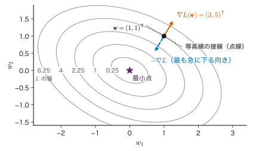
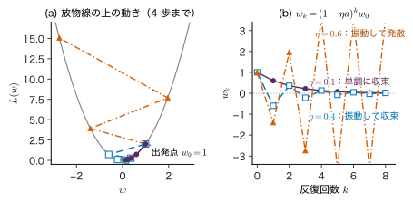
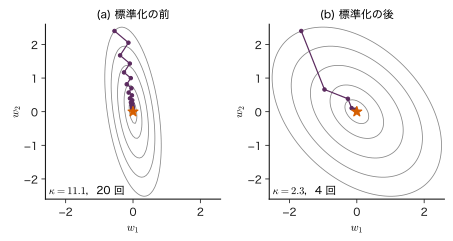
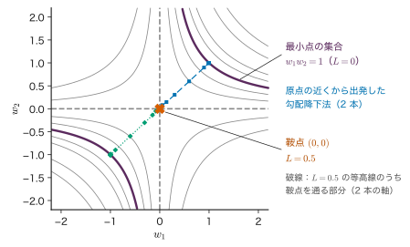
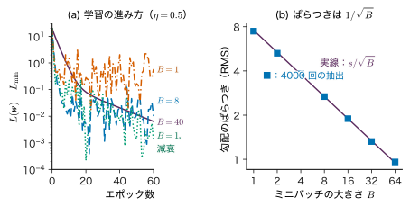
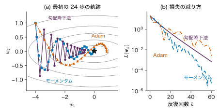
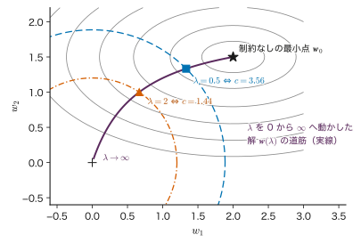
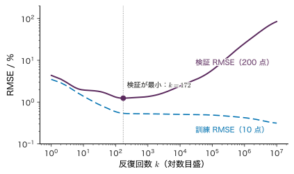
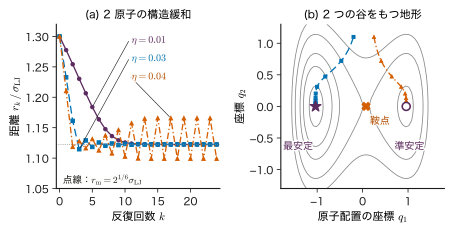

第7章最適化の基礎 — 損失の谷を下る
- 学習率を 0.1 から 0.6 に上げただけで，損失が減るどころか増え続けることがある．学習率を大きくすると，なぜ学習が発散するのか．
- 焼成温度（1000 °C 台）と組成（0〜1）をそのまま入力にすると，学習がなかなか進まない．入力の目盛りを変えるだけで何が変わるのか．
- 訓練データの損失を最小にできれば，それは良いモデルか．
谷底を目指して霧の中の山を下る人を想像してほしい．遠くは見えないが，足もとの傾きは分かる．そこで「いちばん急に下っている向きに少しだけ進む」を繰り返す．機械学習の学習の大部分は，この素朴な手順でできている．損失関数 $L(\bm{w})$ を山の高さ，パラメーター $\bm{w}$ を地図の上の位置と見れば，足もとの傾きが勾配，一歩の大きさが学習率である．ところが，一歩を欲張ると谷を飛び越えて反対側の斜面のさらに高い所に出てしまい，それを繰り返すと高さが増え続ける．たとえば $L(w)=2w^{2}$ という最も単純な谷で，$w=1$ から出発すると，学習率が 0.1 なら 5 歩で $w=0.078$ まで下るのに，0.6 なら 5 歩で $w=-5.4$ まで登ってしまう．この違いは偶然ではなく，谷の「曲がり具合」と一歩の大きさの比で決まる．
本章では，損失の地形と勾配から出発し，勾配降下法が収束する条件を二次関数で正確に導く．次に，入力のスケーリングが谷の形を変えること，凸関数なら局所的な最小が大域的な最小であること，データの一部で勾配を見積もる確率的勾配降下法，その改良であるモーメンタム・RMSProp・Adamを順に扱う．後半では，制約付きの最適化（Lagrange の未定乗数法と KKT 条件），正則化と制約の関係，Newton 法と準 Newton 法を学び，最後に「最適化できたこと」と「汎化できること」は別であることを確かめる．材料との接点では，原子に働く力に沿ってエネルギーを下げる構造緩和が，勾配降下法そのものであることを見る．
- 一次の Taylor 展開から，勾配が最も急に増える向きであることを導ける．
- 二次関数の勾配降下法を固有値ごとに分けて解き，学習率の上限 $2/\lambda_{\max}$ と，収束の速さが条件数で決まることを説明できる．
- 入力の標準化が損失の谷を丸くし，学習を速くすることを数値で示せる．
- 凸関数・局所解・鞍点を区別し，最小二乗法が凸，ニューラルネットワークが非凸であることを説明できる．
- ミニバッチ勾配が全データの勾配の不偏推定であること，そのばらつきが $1/\sqrt{B}$ に比例することを証明できる．
- モーメンタム・RMSProp・Adam の更新式を書き，それぞれが何を直す工夫かを言える．
- Lagrange の未定乗数法と KKT 条件で，制約付きの小さな問題を手で解ける．罰則項と制約の対応を説明できる．
- Newton 法の一歩を導き，勾配降下法との違い（速さ・計算量・非凸での危うさ）を言える．
- 構造緩和の一歩の大きさが，最も硬い結合で制限されることを説明できる．
7.1 損失の地形と勾配
7.1.1 何をしたいのか
第6章までで，学習とは「訓練データに対する損失 $L(\bm{w})$ を小さくするパラメーター $\bm{w}$ を探すこと」だと見てきた（最尤推定は負の対数尤度を，最小二乗法は二乗誤差を小さくする）．線形回帰のように答えを式で書ける場合もある（第8章）が，ニューラルネットワークを含む多くのモデルでは式で解けず，「少しずつ $\bm{w}$ を動かして $L$ を下げる」しかない．どの向きに，どれだけ動かせばよいかを決めるのが本章の主題である．
$\bm{w}$ が 2 成分なら，$L(\bm{w})$ は平面の上の「地形」として描ける．同じ高さの点を結んだ曲線が等高線である（図7.1）．地形の上の各点で，足もとの傾きを表すのが勾配である．
7.1.2 定義と記号
記号：この章で使う量
パラメーターを列ベクトル $\bm{w}=(w_1,\dots,w_M)^{\tp}\in\R^{M}$ とまとめ，損失（目的関数）を $L(\bm{w})$ と書く（値は実数のスカラー）．反復の番号を $k=0,1,2,\dots$ とし，$k$ 回目の値を $\bm{w}_k$ と書く（成分の添字 $w_i$ と区別するため，反復の番号は太字のベクトルに付ける）．最小点を $\bm{w}^{*}$ と書く．学習率は $\eta\gt0$（スカラー）．Hesse 行列（7.2 節）を $\bm{H}\in\R^{M\times M}$，その固有値を $\lambda_1,\dots,\lambda_M$ と書く．固有値の $\lambda_i$ は必ず添字か $\max$・$\min$ を付けて書き，添字のない $\lambda$（正則化係数．7.8 節）と区別する．
損失の規約：本章では，$N$ 点のデータに対する損失を 1 点ごとの損失の平均（$\frac1N\sum_{n}$）で書く（7.5 節の式 \eqref{eq:7-avg-loss}．第14・15章も同じ）．第8・9章は $\frac1N$ のない和で書く．どちらでも最小点は同じで，勾配と Hesse 行列が $N$ 倍違うだけである（そのぶん，和の規約では学習率の上限 $2/\lambda_{\max}$ が $N$ 分の 1 になる）．
定義7.1 勾配
$L(\bm{w})$ の各成分についての偏微分を並べた列ベクトル（$\R^{M}$ の元）
\begin{equation} \begin{aligned} &\nabla L(\bm{w})\\ &=\left(\pdiff{L}{w_1},\ \dots,\ \pdiff{L}{w_M}\right)^{\tp} \end{aligned} \label{eq:7-grad} \end{equation}を $\bm{w}$ における勾配（gradient）という．$\nabla$ は「ナブラ」と読む．$L$ が無次元で $w_i$ に単位があれば，$\partial L/\partial w_i$ の単位は「$w_i$ の単位の逆数」である．
7.1.3 勾配は最も急に増える向き
$\bm{w}$ から小さなベクトル $\bm{\Delta}\in\R^{M}$ だけ動いたときの損失の変化を考える．多変数の一次の Taylor 展開（大学数学 第6章 6.6）より
\begin{equation} \begin{aligned} L(\bm{w}+\bm{\Delta})={}&L(\bm{w})+\nabla L(\bm{w})^{\tp}\bm{\Delta}\\ &+O(\norm{\bm{\Delta}}^{2}) \end{aligned} \label{eq:7-taylor1} \end{equation}である．右辺の第 2 項 $\nabla L^{\tp}\bm{\Delta}=\sum_i(\partial L/\partial w_i)\Delta_i$ は，各成分の変化が損失に与える影響を足し合わせたものである．
定理7.1 最も急に増える向きと減る向き
$\nabla L(\bm{w})\ne\bm{0}$ とする．長さ 1 の向き $\bm{u}$（$\norm{\bm{u}}=1$）のうち，方向微分 $\nabla L(\bm{w})^{\tp}\bm{u}$ を最大にするのは $\bm{u}=\nabla L/\norm{\nabla L}$ であり，最大値は $\norm{\nabla L(\bm{w})}$ である．最小にするのは $\bm{u}=-\nabla L/\norm{\nabla L}$ であり，最小値は $-\norm{\nabla L(\bm{w})}$ である．
証明
式 \eqref{eq:7-taylor1} で $\bm{\Delta}=\epsilon\bm{u}$（$\epsilon\gt0$ は小さな数）とおくと，損失の変化は $\epsilon\,\nabla L^{\tp}\bm{u}$ で近似される．ベクトル $\bm{g}=\nabla L$ と $\bm{u}$ のなす角を $\theta$ とすると，内積の定義より
$$ \bm{g}^{\tp}\bm{u}=\norm{\bm{g}}\,\norm{\bm{u}}\cos\theta=\norm{\bm{g}}\cos\theta . $$$-1\le\cos\theta\le1$ なので，$\bm{g}^{\tp}\bm{u}$ は $\theta=0$（$\bm{u}$ が $\bm{g}$ と同じ向き）で最大値 $\norm{\bm{g}}$，$\theta=\pi$（逆向き）で最小値 $-\norm{\bm{g}}$ をとる．$\theta=\pi/2$ の向きでは一次の変化が 0 であり，これが等高線の接線の向きである．
（証明終わり）
したがって，損失を最も速く下げたければ $-\nabla L$ の向きに進めばよい．また，勾配は等高線に直交する（図7.1）．これは大学数学 第18章 18.6 で学んだ勾配の幾何学的意味と同じである．

数学の道具：二次形式の勾配
対称行列 $\bm{H}\in\R^{M\times M}$（$H_{ij}=H_{ji}$）と $\bm{b}\in\R^{M}$ について
$$ \nabla\Bigl(\tfrac12\bm{w}^{\tp}\bm{H}\bm{w}\Bigr)=\bm{H}\bm{w},\qquad \nabla\bigl(\bm{b}^{\tp}\bm{w}\bigr)=\bm{b} . $$成分で確かめる．$\tfrac12\bm{w}^{\tp}\bm{H}\bm{w}=\tfrac12\sum_{i}\sum_{j}H_{ij}w_iw_j$ を $w_k$ で微分すると，$i=k$ の項から $\tfrac12\sum_j H_{kj}w_j$，$j=k$ の項から $\tfrac12\sum_i H_{ik}w_i$ が出る．$H_{ik}=H_{ki}$ なので両者は等しく，合計は $\sum_j H_{kj}w_j=(\bm{H}\bm{w})_k$ である．
例題7.1 勾配と最も急な下りの向き
$L(w_1,w_2)=w_1^{2}+w_1w_2+2w_2^{2}$ とする．(1) これを $\tfrac12\bm{w}^{\tp}\bm{H}\bm{w}$ の形に書き，$\bm{H}$ を求めよ．(2) $\bm{w}=(1,1)^{\tp}$ での勾配とその大きさを求めよ．(3) この点から $w_1$ の正の向き $\bm{u}=(1,0)^{\tp}$ に進むときの方向微分と，最も急に下る向きの方向微分を比べよ．(4) $-\nabla L$ の向きに長さ $\epsilon=0.001$ だけ進んだときの $L$ の変化を，式 \eqref{eq:7-taylor1} で見積もれ．
解答 (1) $\tfrac12(H_{11}w_1^{2}+2H_{12}w_1w_2+H_{22}w_2^{2})$ と係数を比べて，$H_{11}/2=1$，$H_{12}=1$，$H_{22}/2=2$．よって $\bm{H}=\begin{pmatrix}2&1\\1&4\end{pmatrix}$（図7.1 の行列）．
(2) 偏微分を直接計算すると $\partial L/\partial w_1=2w_1+w_2$，$\partial L/\partial w_2=w_1+4w_2$．$(1,1)$ では $\nabla L=(3,5)^{\tp}$ であり，$\bm{H}\bm{w}=(2+1,\ 1+4)^{\tp}$ と一致する．大きさは $\norm{\nabla L}=\sqrt{9+25}=\sqrt{34}\approx5.831$．$L(1,1)=1+1+2=4$．
(3) $\nabla L^{\tp}\bm{u}=3\times1+5\times0=3$ なので，$w_1$ の向きでは損失は傾き 3 で増える．最も急に下る向き $-\nabla L/\norm{\nabla L}$ では傾きは $-\sqrt{34}\approx-5.831$ である．
(4) 変化は $\epsilon\,\nabla L^{\tp}\bm{u}=0.001\times(-5.831)=-0.005831$．実際に $L$ を計算すると $-0.005829$ で，差 $0.000002$ は式 \eqref{eq:7-taylor1} の $O(\norm{\bm{\Delta}}^{2})$ の項による．
7.2 勾配降下法 — 一歩の大きさと谷の曲がり具合
7.2.1 更新式
定義7.2 勾配降下法
初期値 $\bm{w}_0\in\R^{M}$ から出発し，学習率 $\eta\gt0$ を決めて
\begin{equation} \bm{w}_{k+1}=\bm{w}_k-\eta\,\nabla L(\bm{w}_k) \label{eq:7-gd} \end{equation}を $k=0,1,2,\dots$ について繰り返す方法を勾配降下法（gradient descent），または最急降下法という．勾配が十分小さくなる，損失の減り方が十分小さくなる，決めた回数に達する，のいずれかで止める．
7.1 節より $-\nabla L$ は最も急に下る向きなので，$\eta$ が十分小さければ $L(\bm{w}_{k+1})\lt L(\bm{w}_k)$ となる．実際，式 \eqref{eq:7-taylor1} に $\bm{\Delta}=-\eta\nabla L$ を入れると $L(\bm{w}_{k+1})\approx L(\bm{w}_k)-\eta\norm{\nabla L}^{2}$ である．問題は「十分小さい」がどれくらいか，である．大きすぎると一次の近似が破れ，小さすぎると何万回も反復が要る．それを最も単純な谷で正確に調べる．
7.2.2 1 次元の放物線で手計算する
$L(w)=\tfrac12 a w^{2}$（$a\gt0$．最小点は $w^{*}=0$）とする．$a=L''(w)$ は谷の曲がり具合（曲率）であり，$a$ が大きいほど谷は急で狭い．$L'(w)=aw$ なので，式 \eqref{eq:7-gd} は
\begin{equation} \begin{aligned} w_{k+1}&=w_k-\eta a w_k\\ &=(1-\eta a)\,w_k \end{aligned} \label{eq:7-gd1d} \end{equation}となる．これを $k$ 回繰り返すと $w_k=(1-\eta a)^{k}w_0$ である．$k\to\infty$ で $w_k\to0$ となるのは $\abs{1-\eta a}\lt1$，すなわち $-1\lt1-\eta a\lt1$ のときで，これを $\eta$ について解くと
\begin{equation} 0\lt\eta\lt\frac{2}{a} \label{eq:7-eta1d} \end{equation}である．$\eta\gt2/a$ では $\abs{1-\eta a}\gt1$ なので $\abs{w_k}$ は指数関数的に増える（発散）．さらに細かく見ると次の 4 通りに分かれる（図7.2）．
- $0\lt\eta\lt1/a$：$0\lt1-\eta a\lt1$．符号を変えずに単調に 0 へ近づく．
- $\eta=1/a$：$1-\eta a=0$．1 歩で最小点に着く（二次関数に限る）．
- $1/a\lt\eta\lt2/a$：$-1\lt1-\eta a\lt0$．毎回谷を飛び越えて符号を変えながら，0 へ近づく．
- $\eta\gt2/a$：$1-\eta a\lt-1$．谷を飛び越えるたびに反対側でより高い所に出て，発散する．
例題7.2 3 通りの学習率
$L(w)=\tfrac12\cdot4\,w^{2}=2w^{2}$，$w_0=1$ とする．$\eta=0.1,\ 0.4,\ 0.6$ のそれぞれについて $w_1,\dots,w_5$ を求め，収束するかどうかを式 \eqref{eq:7-eta1d} と照らし合わせよ．$\eta=0.25$ ではどうなるか．
解答 $a=4$ なので $2/a=0.5$，$1/a=0.25$ である．係数 $1-\eta a$ を求めて掛けていく．
- $\eta=0.1$：$1-0.4=0.6$．$w_k=0.6^{k}$ より $w_1$ から $w_5$ は順に $0.6$，$0.36$，$0.216$，$0.1296$，$0.0778$．単調に収束する（$\eta\lt1/a$）．
- $\eta=0.4$：$1-1.6=-0.6$．$w_1$ から $w_5$ は順に $-0.6$，$0.36$，$-0.216$，$0.1296$，$-0.0778$．符号を変えながら収束する（$1/a\lt\eta\lt2/a$）．$\abs{w_k}$ は $\eta=0.1$ のときと同じである．
- $\eta=0.6$：$1-2.4=-1.4$．$w_1$ から $w_5$ は順に $-1.4$，$1.96$，$-2.744$，$3.842$，$-5.378$．発散する（$\eta\gt2/a$）．損失 $2w_k^{2}$ は $2$，$3.92$，$7.68$，$15.1$，$29.5$，$57.9$ と毎回 $1.96$ 倍になる．
- $\eta=0.25$：$1-1=0$．$w_1=0$ で，1 歩で最小点に着く．

7.2.3 多次元の二次関数 — 固有値ごとに分ける
最小点の近くでは，多くの滑らかな損失は二次関数で近似できる（7.4 節の式 \eqref{eq:7-taylor2}）．そこで
\begin{equation} \begin{aligned} L(\bm{w})={}&\tfrac12(\bm{w}-\bm{w}^{*})^{\tp}\bm{H}(\bm{w}-\bm{w}^{*})\\ &+L^{*} \end{aligned} \label{eq:7-quad} \end{equation}を調べる．$\bm{H}\in\R^{M\times M}$ は対称で正定値（すべての固有値が正）とし，$L^{*}$ は最小値（定数）である．$\bm{H}$ は $L$ の 2 階偏微分を並べた行列 $H_{ij}=\partial^{2}L/\partial w_i\partial w_j$ で，Hesse 行列（Hessian）と呼ぶ．7.1 節の「数学の道具」より $\nabla L=\bm{H}(\bm{w}-\bm{w}^{*})$ なので，最小点からのずれ $\bm{e}_k\equiv\bm{w}_k-\bm{w}^{*}$ について，式 \eqref{eq:7-gd} は
\begin{equation} \begin{aligned} \bm{e}_{k+1}&=\bm{e}_k-\eta\bm{H}\bm{e}_k\\ &=(\bm{I}-\eta\bm{H})\,\bm{e}_k \end{aligned} \label{eq:7-gdquad} \end{equation}となる．$\bm{I}$ は $M\times M$ の単位行列である．
行列のままでは見通しが悪いので，$\bm{H}$ の固有ベクトルの座標に移る．対称行列 $\bm{H}$ は，互いに直交する長さ 1 の固有ベクトル $\bm{q}_1,\dots,\bm{q}_M$（$\bm{H}\bm{q}_i=\lambda_i\bm{q}_i$）を持つ（付録A の A.3 節）．ずれを $\bm{e}_k=\sum_i c_{i,k}\,\bm{q}_i$ と展開する（$c_{i,k}=\bm{q}_i^{\tp}\bm{e}_k$ は $i$ 番目の固有ベクトルの向きの成分）．式 \eqref{eq:7-gdquad} の右辺は
$$ \begin{aligned} (\bm{I}-\eta\bm{H})\sum_i c_{i,k}\bm{q}_i &=\sum_i c_{i,k}\bigl(\bm{q}_i-\eta\bm{H}\bm{q}_i\bigr)\\ &=\sum_i c_{i,k}\bigl(1-\eta\lambda_i\bigr)\bm{q}_i \end{aligned} $$となる．両辺の $\bm{q}_i$ の係数を比べると
\begin{equation} \begin{aligned} c_{i,k+1}&=(1-\eta\lambda_i)\,c_{i,k},\\ c_{i,k}&=(1-\eta\lambda_i)^{k}c_{i,0} \end{aligned} \label{eq:7-modes} \end{equation}を得る．つまり，$M$ 次元の勾配降下法は，固有ベクトルの向きごとに独立な 1 次元の問題（式 \eqref{eq:7-gd1d} で $a=\lambda_i$ としたもの）に分かれる．すべての向きで収束するには，すべての $i$ で $0\lt\eta\lt2/\lambda_i$ が必要である．最も厳しいのは最大の固有値 $\lambda_{\max}$ なので
が収束の条件である．これが冒頭の問いの答えである：学習率を大きくすると発散するのは，最も急な向き（最大の曲率の向き）で谷を飛び越える量が毎回増えるからである．
7.2.4 収束の速さは条件数で決まる
$\eta$ を式 \eqref{eq:7-etamax} の範囲で選んでも，平らな向き（小さな $\lambda_i$）では $1-\eta\lambda_i$ が 1 に近く，なかなか縮まない．全体の縮み方は，各向きの係数の絶対値の最大 $\rho(\eta)=\max_i\abs{1-\eta\lambda_i}$ で決まる．$\abs{1-\eta\lambda_i}$ は $\lambda_i$ の一次関数の絶対値なので，最大は両端の $\lambda_{\min}$ か $\lambda_{\max}$ でとる．$\eta$ を大きくすると $\abs{1-\eta\lambda_{\min}}=1-\eta\lambda_{\min}$ は減り，$\abs{1-\eta\lambda_{\max}}$ は（$\eta\gt1/\lambda_{\max}$ で）増える．両者が等しくなる
$$ \begin{aligned} &1-\eta\lambda_{\min}=\eta\lambda_{\max}-1\\ &\Longrightarrow\quad \eta_{\mathrm{opt}}=\frac{2}{\lambda_{\max}+\lambda_{\min}} \end{aligned} $$で $\rho$ は最小になり（演習7.2），その値は
\begin{equation} \begin{aligned} \rho_{\mathrm{opt}}&=1-\frac{2\lambda_{\min}}{\lambda_{\max}+\lambda_{\min}}\\ &=\frac{\kappa-1}{\kappa+1},\quad \kappa\equiv\frac{\lambda_{\max}}{\lambda_{\min}} \end{aligned} \label{eq:7-rate} \end{equation}である．$\kappa\ge1$ を $\bm{H}$ の条件数（condition number）という．$\kappa=1$（等高線が円）なら $\rho=0$ で 1 歩で着く．$\kappa$ が大きい（細長い谷）と $\rho$ は 1 に近く，ずれを $\epsilon$ 倍に縮めるのに必要な反復回数 $\ln\epsilon/\ln\rho$ は，$\kappa\gg1$ のとき $\ln\rho\approx-2/\kappa$ より約 $\tfrac{\kappa}{2}\ln(1/\epsilon)$ となり，条件数に比例して増える．
例題7.3 2 次元の谷の学習率の上限
$\bm{H}=\diag(10,1)$（対角成分が 10 と 1 の対角行列）の二次関数 \eqref{eq:7-quad} に勾配降下法を使う．(1) 収束する $\eta$ の範囲を求めよ．(2) $\eta=0.05,\ 0.15,\ 0.21$ のそれぞれで，2 つの向きの係数 $1-\eta\lambda_i$ と $\rho$ を求めよ．(3) 最適な一定の学習率と，そのときの $\rho$ を求め，誤差を $10^{-3}$ 倍にするのに何回かかるか見積もれ．
解答 対角行列の固有値は対角成分なので $\lambda_{\max}=10$，$\lambda_{\min}=1$，$\kappa=10$．
(1) 式 \eqref{eq:7-etamax} より $0\lt\eta\lt2/10=0.2$．
(2) $\eta=0.05$：$(1-0.5,\ 1-0.05)=(0.5,\ 0.95)$，$\rho=0.95$．$\eta=0.15$：$(-0.5,\ 0.85)$，$\rho=0.85$．$\eta=0.21$：$(-1.1,\ 0.79)$，$\rho=1.1\gt1$ で，$\lambda=10$ の向きだけが発散する．緩い向きの係数 0.79 は 3 つの中で最も小さいのに，急な向きのせいで全体は発散する．
(3) $\eta_{\mathrm{opt}}=2/(10+1)=0.1818$，$\rho_{\mathrm{opt}}=(10-1)/(10+1)=9/11\approx0.818$．$0.818^{k}=10^{-3}$ を解くと $k=\ln10^{-3}/\ln(9/11)\approx34.4$ なので，35 回．
7.3 スケーリングと標準化 — 細長い谷を丸くする詳しいルート
7.3.1 入力の桁が違うと谷が細長くなる
線形モデル $f(\bm{x};\bm{w})=\bm{w}^{\tp}\bm{\phi}(\bm{x})$ を，平均の二乗誤差
$$ L(\bm{w})=\frac{1}{2N}\sum_{n=1}^{N}\bigl(y_n-\bm{w}^{\tp}\bm{\phi}_n\bigr)^{2} $$で学習するとする．ここで $\bm{\phi}_n\equiv\bm{\phi}(\bm{x}_n)\in\R^{M}$ である（第8章では $1/N$ のない「和」の形を使う．どちらでも最小点は同じで，Hesse 行列が $N$ 倍違うだけである）．$w_i$ と $w_j$ で 2 回微分すると，計画行列 $\bm{\Phi}\in\R^{N\times M}$（第 $n$ 行が $\bm{\phi}_n^{\tp}$）を使って
\begin{equation} \begin{aligned} \bm{H}&=\frac{1}{N}\sum_{n=1}^{N}\bm{\phi}_n\bm{\phi}_n^{\tp}\\ &=\frac1N\bm{\Phi}^{\tp}\bm{\Phi}\in\R^{M\times M} \end{aligned} \label{eq:7-hess-ls} \end{equation}となる（成分で書くと $H_{ij}=\frac1N\sum_n\phi_{ni}\phi_{nj}$．$w$ によらない定数行列なので，この損失はちょうど式 \eqref{eq:7-quad} の形である）．$H_{ii}$ は $i$ 番目の特徴量の二乗の平均である．焼成温度 $T$（°C）をそのまま特徴量にすると $T^{2}$ の平均は $10^{6}$ 程度，組成 $x\in[0,1]$ なら $x^{2}$ の平均は $0.1$ 程度で，対角成分だけで 7 桁違う．これは $\kappa$ が $10^{7}$ 程度以上の，極端に細長い谷を意味する．
定義7.3 標準化
特徴量 $\phi_j$ の訓練データでの平均 $m_j=\frac1N\sum_n\phi_{nj}$ と標準偏差 $s_j=\sqrt{\frac1N\sum_n(\phi_{nj}-m_j)^{2}}$ を使って
\begin{equation} z_{nj}=\frac{\phi_{nj}-m_j}{s_j} \label{eq:7-std} \end{equation}と変換することを標準化（standardization）という．変換後の特徴量は平均 0，標準偏差 1 で，無次元になる．定数の特徴量（切片の $\phi_0=1$）は標準化しない．$m_j$ と $s_j$ は訓練データだけで計算し，検証・テストのデータにも同じ値を使う（データ漏洩を避けるため．第6章 6.7 節）．
標準化すると，切片の列 $\bm{1}$ と標準化した列は直交する（$\sum_n z_{nj}=0$ だから）．さらに $\frac1N\sum_n z_{nj}^{2}=1$，$\frac1N\sum_n z_{ni}z_{nj}=r_{ij}$（特徴量 $i$ と $j$ の相関係数）なので，式 \eqref{eq:7-hess-ls} の $\bm{H}$ は
$$ \bm{H}_{\mathrm{std}}=\begin{pmatrix}1&\bm{0}^{\tp}\\ \bm{0}&\bm{C}\end{pmatrix},\qquad C_{ij}=r_{ij} $$となる（$\bm{C}$ は相関行列）．対角成分がすべて 1 にそろい，条件数は特徴量どうしの相関だけで決まる．2 つの特徴量なら $\bm{C}=\begin{pmatrix}1&r\\r&1\end{pmatrix}$ の固有値は $1\pm r$ なので，全体の固有値は $1,\ 1+\abs{r},\ 1-\abs{r}$ で
$$ \kappa_{\mathrm{std}}=\frac{1+\abs{r}}{1-\abs{r}} $$である．相関が強い（$\abs{r}\to1$）と標準化しても谷は細長いままで，これは多重共線性（第8章）の問題である．

例題7.4 焼成温度と組成をそのまま使うと
焼成温度 $T$ と組成 $x$ の 4 組 $(T,x)=(1100\ ^{\circ}\mathrm{C},0.2)$，$(1200,0.8)$，$(1300,0.4)$，$(1400,0.6)$ を入力とし，特徴量 $\bm{\phi}=(1,T,x)^{\tp}$ の線形回帰を平均二乗誤差で学習する（教育用の数値例）．(1) 式 \eqref{eq:7-hess-ls} の $\bm{H}$ を求めよ．(2) $T$ と $x$ の平均・標準偏差・相関係数を求め，標準化した後の $\bm{H}$ と条件数を求めよ．(3) 標準化の前の $\bm{H}$ の固有値は $7.50\times10^{-3}$，$4.44\times10^{-2}$，$1.575\times10^{6}$ である．条件数と学習率の上限を求め，標準化の前後で必要な反復回数を比べよ．
解答 (1) 成分ごとに 4 点の平均をとる．$\overline{1}=1$，$\overline{T}=(1100+1200+1300+1400)/4$ $=1250$，$\overline{x}=(0.2+0.8+0.4+0.6)/4=0.5$，$\overline{T^{2}}=(1.21+1.44+1.69+1.96)\times10^{6}/4$ $=1.575\times10^{6}$，$\overline{Tx}=(220+960+520+840)/4=635$，$\overline{x^{2}}=(0.04+0.64+0.16+0.36)/4=0.30$．よって
$$ \bm{H}=\begin{pmatrix}1&1250&0.5\\1250&1.575\times10^{6}&635\\0.5&635&0.30\end{pmatrix}. $$(2) $m_T=1250$，$s_T^{2}=\overline{T^{2}}-m_T^{2}$ $=1.575\times10^{6}-1.5625\times10^{6}$ $=12500$，$s_T=111.8$．$m_x=0.5$，$s_x^{2}=0.30-0.25=0.05$，$s_x=0.2236$．共分散は $\overline{Tx}-m_Tm_x=635-625=10$ なので，$r=10/(111.8\times0.2236)=10/25=0.4$．標準化した後の $\bm{H}$ は
$$ \bm{H}_{\mathrm{std}}=\begin{pmatrix}1&0&0\\0&1&0.4\\0&0.4&1\end{pmatrix}, $$固有値は $1,\ 1.4,\ 0.6$ で，$\kappa_{\mathrm{std}}=1.4/0.6=7/3\approx2.33$．
(3) 標準化の前は $\kappa=1.575\times10^{6}/7.50\times10^{-3}\approx2.1\times10^{8}$，学習率の上限は $2/\lambda_{\max}=2/(1.575\times10^{6})\approx1.27\times10^{-6}$ である．最適な一定の学習率でも $\rho=(\kappa-1)/(\kappa+1)$ で，誤差を $10^{-6}$ 倍にするには $\ln10^{-6}/\ln\rho\approx1.4\times10^{9}$ 回かかる．標準化の後は $\rho=(7/3-1)/(7/3+1)=0.4$ なので $\ln10^{-6}/\ln0.4\approx15.1$，16 回でよい．同じ予測を与えるモデルなのに，入力の目盛りの選び方だけで反復回数が 8 桁変わる．
記号：「平均を引く」だけ，「割る」だけでは不十分
例題7.4 の $T$ と $x$ を中心化（平均を引く）だけにすると，固有値は $0.042,\ 1,\ 1.25\times10^{4}$ で $\kappa\approx3\times10^{5}$ にとどまる．単位を変えて $T/1000$（1000 °C 単位）にするだけでは $\kappa\approx640$ である．両方を行う標準化で初めて $\kappa=2.33$ になる．どの方法でも最小点の予測は変わらない（$w_j$ の値が換算されるだけ）．変わるのは勾配降下法の進みやすさである．
7.4 凸関数・局所解・鞍点詳しいルート
7.4.1 凸関数
定義7.4 凸関数
関数 $L:\R^{M}\to\R$ が，任意の $\bm{u},\bm{v}\in\R^{M}$ と $0\le t\le1$ について
\begin{equation} \begin{aligned} &L\bigl(t\bm{u}+(1-t)\bm{v}\bigr)\\ &\quad\le t\,L(\bm{u})+(1-t)\,L(\bm{v}) \end{aligned} \label{eq:7-convex} \end{equation}を満たすとき，$L$ を凸関数（convex function）という．$0\lt t\lt1$，$\bm{u}\ne\bm{v}$ で常に厳密な不等号が成り立つとき狭義凸という．
式 \eqref{eq:7-convex} の左辺は 2 点を結ぶ線分の上での関数値，右辺は 2 点の関数値を結ぶ弦の高さである．「グラフが弦より上に出ない」が凸の意味である（図7.4(a)）．2 回微分できる関数では，次の判定法が使える．
定理7.2 Hesse 行列による凸性の判定
$L$ が 2 回連続微分可能なとき，$L$ が凸であることと，すべての $\bm{w}$ で Hesse 行列 $\bm{H}(\bm{w})$ が半正定値（任意の $\bm{v}$ で $\bm{v}^{\tp}\bm{H}\bm{v}\ge0$）であることは同値である．すべての $\bm{w}$ で正定値なら狭義凸である．
1 変数では「$L''(w)\ge0$ なら凸」という高校数学の結果（グラフが下に凸）にあたる．証明は Boyd と Vandenberghe の教科書（参考文献）の 3 章にある．本書では判定に使うだけにする．
定理7.3 凸関数では局所的な最小は大域的な最小
$L$ が凸で，$\bm{w}^{*}$ が局所的な最小点（ある近傍の中で $L(\bm{w}^{*})\le L(\bm{w})$）ならば，$\bm{w}^{*}$ は大域的な最小点である．さらに $L$ が微分可能なら，$\nabla L(\bm{w}^{*})=\bm{0}$ を満たす点はすべて大域的な最小点である．
証明
前半を背理法で示す．$L(\bm{v})\lt L(\bm{w}^{*})$ となる $\bm{v}$ があったとする．$0\lt t\lt1$ について $\bm{w}_t=t\bm{v}+(1-t)\bm{w}^{*}$ とおくと，式 \eqref{eq:7-convex} より
$$ \begin{aligned} L(\bm{w}_t)&\le t\,L(\bm{v})+(1-t)\,L(\bm{w}^{*})\\ &\lt t\,L(\bm{w}^{*})+(1-t)\,L(\bm{w}^{*})=L(\bm{w}^{*}). \end{aligned} $$$t\to0$ とすると $\bm{w}_t$ は $\bm{w}^{*}$ にいくらでも近づくので，$\bm{w}^{*}$ のどんな近傍にも $L$ がより小さい点がある．これは $\bm{w}^{*}$ が局所的な最小点であることに反する．
後半：凸で微分可能な $L$ では，式 \eqref{eq:7-convex} を $t$ で整理して $t\to0$ とすることにより $L(\bm{v})\ge L(\bm{w})+\nabla L(\bm{w})^{\tp}(\bm{v}-\bm{w})$（グラフは接平面より上）が成り立つ．具体的には，式 \eqref{eq:7-convex} で $\bm{u}\to\bm{v}$，$\bm{v}\to\bm{w}$ と読み替えて両辺から $L(\bm{w})$ を引き $t$ で割ると $\{L(\bm{w}+t(\bm{v}-\bm{w}))-L(\bm{w})\}/t\le L(\bm{v})-L(\bm{w})$ で，$t\to0$ で左辺は方向微分 $\nabla L(\bm{w})^{\tp}(\bm{v}-\bm{w})$ になる．$\nabla L(\bm{w}^{*})=\bm{0}$ を代入すると，すべての $\bm{v}$ で $L(\bm{v})\ge L(\bm{w}^{*})$ である．
（証明終わり）
7.4.2 機械学習の損失は凸か
- 最小二乗法：式 \eqref{eq:7-hess-ls} の $\bm{H}=\frac1N\bm{\Phi}^{\tp}\bm{\Phi}$ は，任意の $\bm{v}$ で $\bm{v}^{\tp}\bm{H}\bm{v}=\frac1N\norm{\bm{\Phi}\bm{v}}^{2}\ge0$ なので半正定値である．よって凸である（定理7.2）．Ridge の罰則 $\tfrac{\lambda}{2}\norm{\bm{w}}^{2}$（$\lambda\gt0$）を足すと Hesse 行列は $\bm{H}+\lambda\bm{I}$ になり，正定値なので狭義凸である（最小点はただ 1 つ）．
- ロジスティック回帰：交差エントロピー損失（第9章の和の規約）の Hesse 行列は $\sum_n\hat{y}_n(1-\hat{y}_n)\bm{\phi}_n\bm{\phi}_n^{\tp}$ で半正定値になり，凸である（導出は第9章 9.3 節）．
- ニューラルネットワーク：隠れ層をもつと，一般に凸ではない．たとえば隠れユニットの番号を入れ替えても同じ関数を表すので（第14章 14.8 節），同じ損失の最小点が離れた場所に複数ある．凸関数なら最小点の集合は凸集合（その 2 点を結ぶ線分を含む）でなければならないが，線分の途中では一般に損失が上がる．
7.4.3 停留点の分類と鞍点
$\nabla L(\bm{w}_{\mathrm{s}})=\bm{0}$ を満たす点 $\bm{w}_{\mathrm{s}}$ を停留点という．勾配降下法は停留点で止まる（更新量が 0 になる）が，停留点が最小点とは限らない．停留点のまわりで二次の Taylor 展開をすると，一次の項が消えて
\begin{equation} \begin{aligned} &L(\bm{w}_{\mathrm{s}}+\bm{\Delta})\\ &\approx L(\bm{w}_{\mathrm{s}})+\frac12\bm{\Delta}^{\tp}\bm{H}(\bm{w}_{\mathrm{s}})\,\bm{\Delta} \end{aligned} \label{eq:7-taylor2} \end{equation}となる．$\bm{\Delta}$ を $\bm{H}$ の固有ベクトルで展開すると $\tfrac12\bm{\Delta}^{\tp}\bm{H}\bm{\Delta}=\tfrac12\sum_i\lambda_i c_i^{2}$ なので，
- すべての $\lambda_i\gt0$：どの向きに動いても上がる → 局所的な最小点．
- すべての $\lambda_i\lt0$：どの向きに動いても下がる → 局所的な最大点．
- 正と負の $\lambda_i$ が混ざる：ある向きでは上がり，別の向きでは下がる → 鞍点（saddle point．馬の鞍の形）．
- 0 の固有値がある：二次の項だけでは判定できない（平らな向きがある）．
これは大学数学 第6章 6.6 の「2 次形式の符号による極値の判定」を $M$ 次元にしたものである．
例題7.5 最も小さな「2 層」のモデルの損失
入力 $x=1$ に対して目標値 $y=1$ を，2 つの重みの積 $f=w_2w_1x$ で表したい（隠れユニット 1 個で活性化が恒等写像のネットワークにあたる）．損失を $L(w_1,w_2)=\tfrac12(w_1w_2-1)^{2}$ とする．(1) 勾配と Hesse 行列を求めよ．(2) 原点 $(0,0)$ は停留点か．どの種類か．(3) $(1,1)$ と $(2,0.5)$ での Hesse 行列の固有値を求めよ．(4) $L$ が凸でないことを，定義 \eqref{eq:7-convex} で示せ．
解答 (1) $u=w_1w_2-1$ とおくと $L=\tfrac12u^{2}$，連鎖律より $\partial L/\partial w_1=u\,w_2$，$\partial L/\partial w_2=u\,w_1$．もう一度微分すると
$$ \begin{aligned} &\frac{\partial^{2}L}{\partial w_1^{2}}=w_2^{2},\qquad \frac{\partial^{2}L}{\partial w_2^{2}}=w_1^{2},\\ &\frac{\partial^{2}L}{\partial w_1\partial w_2}=w_2\,w_1+u=2w_1w_2-1 . \end{aligned} $$(2) 原点では $u=-1$ で，勾配 $(u\,w_2,\ u\,w_1)=(0,0)$ なので停留点である．$\bm{H}(0,0)=\begin{pmatrix}0&-1\\-1&0\end{pmatrix}$ の固有値は，$\det(\bm{H}-\lambda\bm{I})=\lambda^{2}-1=0$ より $\lambda=\pm1$．正と負が混ざるので鞍点である．固有ベクトル $(1,1)^{\tp}/\sqrt2$（$\lambda=-1$）の向きに進むと $w_1w_2\gt0$ が増えて損失が下がり，$(1,-1)^{\tp}/\sqrt2$（$\lambda=+1$）の向きでは $w_1w_2\lt0$ となって上がる．
(3) $(1,1)$：$u=0$，$\bm{H}=\begin{pmatrix}1&1\\1&1\end{pmatrix}$，固有値は $0$ と $2$．$(2,0.5)$：$\bm{H}=\begin{pmatrix}0.25&1\\1&4\end{pmatrix}$，固有値は $\det=0.25\times4-1=0$ と $\tr=4.25$ より $0$ と $4.25$．どちらも最小点（$L=0$）だが固有値 0 をもつ．これは最小点が双曲線 $w_1w_2=1$ に沿って連なり，その向きには損失が変わらないからである（図7.5）．
(4) $\bm{u}=(1,1)$，$\bm{v}=(-1,-1)$ はどちらも $L=0$．$t=1/2$ の中点は原点で $L=0.5$．式 \eqref{eq:7-convex} の右辺は $\tfrac12\times0+\tfrac12\times0=0$ なので $0.5\le0$ が成り立たず，凸でない．

なぜ鞍点が問題になるのか
鞍点のまわりでは勾配が小さいので，勾配降下法の一歩も小さくなり，進みが遅くなる．ちょうど鞍点の上から出発すると（例題7.5 の原点），勾配が厳密に 0 なので一歩も動かない．ニューラルネットワークで重みを全部 0 から始めてはいけない理由の一つがこれである（第15章 15.6 節で初期化として扱う）．一方，ミニバッチの勾配に含まれるばらつき（7.5 節）は，鞍点から抜け出すきっかけにもなる．
7.5 確率的勾配降下法とミニバッチ
7.5.1 全データの勾配は高くつく
機械学習の損失は，多くの場合，データ 1 点ごとの損失 $\ell_n(\bm{w})$（$n$ 番目のデータ $(\bm{x}_n,y_n)$ に対する損失）の平均である．
\begin{equation} \begin{aligned} L(\bm{w})&=\frac1N\sum_{n=1}^{N}\ell_n(\bm{w}),\\ \nabla L(\bm{w})&=\frac1N\sum_{n=1}^{N}\nabla\ell_n(\bm{w}) \end{aligned} \label{eq:7-avg-loss} \end{equation}たとえば二乗誤差なら $\ell_n=\tfrac12(f(\bm{x}_n;\bm{w})-y_n)^{2}$ である．勾配降下法の 1 歩には $N$ 点すべての勾配が要る．$N$ が数万〜数億になると，1 歩ごとに全データを読むのは遅すぎる．そこで，毎回データの一部だけで勾配を見積もる．
定義7.5 ミニバッチと確率的勾配降下法
データの番号の中から $B$ 個を選んだ集合 $\mathcal{B}$ をミニバッチ（大きさ $B$）といい，
\begin{equation} \bm{g}_{\mathcal{B}}(\bm{w})=\frac1B\sum_{n\in\mathcal{B}}\nabla\ell_n(\bm{w}) \label{eq:7-mb} \end{equation}をミニバッチ勾配という．毎回ミニバッチを選び直して
\begin{equation} \bm{w}_{k+1}=\bm{w}_k-\eta_k\,\bm{g}_{\mathcal{B}_k}(\bm{w}_k) \label{eq:7-sgd} \end{equation}と更新する方法を確率的勾配降下法（stochastic gradient descent, SGD）という．$B=1$ を狭い意味の SGD，$1\lt B\lt N$ をミニバッチ SGD と呼ぶこともある．$B=N$ なら勾配降下法そのものである．学習率 $\eta_k$ は反復とともに変えてよい．
実際の手順では，データの順序を乱数で並べ替え（シャッフル），先頭から $B$ 個ずつ取り出して更新する．全データを 1 回ずつ使い終わるまでを 1 エポック（epoch）という．1 エポックの更新回数は約 $N/B$ 回である．エポックごとに並べ替え直す．
7.5.2 ミニバッチ勾配は不偏で，ばらつきは $1/\sqrt{B}$
ミニバッチ勾配は全データの勾配とは違うが，「平均すれば正しい」ことを示す．ここでは解析しやすい復元抽出（$B$ 個の番号 $i_1,\dots,i_B$ を，それぞれ独立に $\{1,\dots,N\}$ から等確率で選ぶ．同じ番号が重なってもよい）を考える．$\bm{w}$ は固定し，ランダムなのは番号の選び方だけである．
定理7.4 ミニバッチ勾配の期待値と分散
1 点の勾配の平均からのずれの二乗の平均（ばらつきの大きさ）を
$$ s^{2}\equiv\frac1N\sum_{n=1}^{N}\norm{\nabla\ell_n(\bm{w})-\nabla L(\bm{w})}^{2} $$とする．復元抽出のミニバッチ勾配 \eqref{eq:7-mb} について
\begin{equation} \Ex\bigl[\bm{g}_{\mathcal{B}}\bigr]=\nabla L(\bm{w}) \label{eq:7-unbiased} \end{equation} \begin{equation} \Ex\Bigl[\norm{\bm{g}_{\mathcal{B}}-\nabla L(\bm{w})}^{2}\Bigr]=\frac{s^{2}}{B} \label{eq:7-mbvar} \end{equation}が成り立つ．期待値は番号の選び方についてとる．
証明
記号を短くするため $\bm{d}_n\equiv\nabla\ell_n(\bm{w})-\nabla L(\bm{w})$ とおく．式 \eqref{eq:7-avg-loss} より $\frac1N\sum_n\bm{d}_n=\bm{0}$ である．$b$ 番目に選ばれた番号 $i_b$ は $\{1,\dots,N\}$ の一様分布に従うので，
$$ \begin{aligned} \Ex\bigl[\bm{d}_{i_b}\bigr]&=\sum_{n=1}^{N}\frac1N\,\bm{d}_n=\bm{0},\\ \Ex\bigl[\norm{\bm{d}_{i_b}}^{2}\bigr]&=\frac1N\sum_{n=1}^{N}\norm{\bm{d}_n}^{2}=s^{2}. \end{aligned} $$期待値：$\bm{g}_{\mathcal{B}}-\nabla L=\frac1B\sum_{b=1}^{B}\bm{d}_{i_b}$ である（$\nabla L$ を $B$ 回足して $B$ で割ると $\nabla L$ に戻ることを使った）．期待値の線形性（第2章 2.5 節）より $\Ex[\bm{g}_{\mathcal{B}}-\nabla L]=\frac1B\sum_b\Ex[\bm{d}_{i_b}]=\bm{0}$．これが式 \eqref{eq:7-unbiased} である．
分散：ノルムの二乗を内積で展開する．
$$ \begin{aligned} \norm{\textstyle\frac1B\sum_{b}\bm{d}_{i_b}}^{2} &=\frac1{B^{2}}\sum_{b=1}^{B}\sum_{b'=1}^{B}\bm{d}_{i_b}^{\tp}\bm{d}_{i_{b'}}\\ &=\frac1{B^{2}}\Bigl(\sum_{b}\norm{\bm{d}_{i_b}}^{2}+\sum_{b\ne b'}\bm{d}_{i_b}^{\tp}\bm{d}_{i_{b'}}\Bigr). \end{aligned} $$$b\ne b'$ では $i_b$ と $i_{b'}$ が独立なので，$\Ex[\bm{d}_{i_b}^{\tp}\bm{d}_{i_{b'}}]=\Ex[\bm{d}_{i_b}]^{\tp}\Ex[\bm{d}_{i_{b'}}]=0$．残る第 1 項の期待値は $B\,s^{2}$ なので，全体は $B\,s^{2}/B^{2}=s^{2}/B$ である．
（証明終わり）
式 \eqref{eq:7-mbvar} の平方根をとると，ミニバッチ勾配のずれの大きさ（二乗平均の平方根，RMS）は $s/\sqrt{B}$ である．これは第2章 2.8 節の「標本平均の分散は $\sigma^{2}/N$」と同じ構造である．ばらつきを半分にするには $B$ を 4 倍にする必要がある（図7.6(b)）．
記号：非復元抽出（シャッフルして順に取る場合）
実際によく使う「並べ替えて $B$ 個ずつ取る」は，同じ番号を重ねない非復元抽出である．このときも 1 つのミニバッチだけを見れば不偏で，分散は $\dfrac{s^{2}}{B}\cdot\dfrac{N-B}{N-1}$ と少し小さくなる（$B=N$ なら 0．全データを使えばばらつきはない）．$B\ll N$ では $s^{2}/B$ とほぼ同じである．
例題7.6 4 点のデータでミニバッチ勾配を数え上げる
1 次元の入力 $x$ と目標値 $y$ の 4 点 $(x_n,y_n)=(1,1),(2,3),(3,2),(4,5)$ に，原点を通る直線 $f=wx$ を当てはめる．1 点の損失を $\ell_n=\tfrac12(wx_n-y_n)^{2}$ とし，$w=1$ で考える．(1) 1 点ごとの勾配 $\ell_n'(w)$ と全データの勾配 $L'(w)$ を求めよ．(2) 大きさ $B=2$ のミニバッチを非復元で選ぶ 6 通りすべてについてミニバッチ勾配を求め，その平均が $L'(w)$ に一致することを確かめよ．(3) 6 通りの分散を求め，上の「記号」の式と比べよ．
解答 (1) $\ell_n'(w)=(wx_n-y_n)x_n$．$w=1$ では $(1-1)\cdot1=0$，$(2-3)\cdot2=-2$，$(3-2)\cdot3=3$，$(4-5)\cdot4=-4$．全データの勾配はその平均 $L'(1)=(0-2+3-4)/4=-0.75$ である．負なので $w$ を増やすと損失が下がる（最小二乗解は $w^{*}=\sum x_ny_n/\sum x_n^{2}=33/30=1.1$）．
(2) 組 $\{1,2\}$：$(0-2)/2=-1$．$\{1,3\}$：$1.5$．$\{1,4\}$：$-2$．$\{2,3\}$：$0.5$．$\{2,4\}$：$-3$．$\{3,4\}$：$-0.5$．6 通りの和は $-4.5$ なので，平均は $-4.5/6=-0.75$ で，$L'(1)$ に一致する．$\{1,3\}$ と $\{2,3\}$ では勾配の符号が逆であり，このミニバッチで更新すると損失を上げる向きに進む．それでも平均すれば正しい向きに進む．
(3) 6 個の値の平均 $-0.75$ からのずれの二乗は順に $0.0625$，$5.0625$，$1.5625$，$1.5625$，$5.0625$，$0.0625$ で，平均は $13.375/6\approx2.229$．一方，平均からのずれ $\ell_n'-L'$ は $0.75$，$-1.25$，$3.75$，$-3.25$ なので，$s^{2}=26.75/4=6.6875$ で，$\dfrac{s^{2}}{B}\cdot\dfrac{N-B}{N-1}=\dfrac{6.6875}{2}\cdot\dfrac{2}{3}\approx2.229$．一致する．
7.5.3 学習率の減衰
一定の学習率 $\eta$ で SGD を続けると，最小点の近くまで来ても，ミニバッチ勾配のばらつき（式 \eqref{eq:7-mbvar}）のせいで $\bm{w}$ は最小点のまわりを動き回り続ける．最小点では $\nabla L=\bm{0}$ でも，各ミニバッチの勾配は 0 ではないからである．動き回る幅は，およそ「$\eta\times$ 勾配のばらつき」に比例する．そこで，反復が進むにつれて $\eta_k$ を小さくする（学習率の減衰，learning rate decay）．Robbins と Monro（1951）にさかのぼる確率近似の理論では，適当な条件のもとで
\begin{equation} \sum_{k=0}^{\infty}\eta_k=\infty,\qquad \sum_{k=0}^{\infty}\eta_k^{2}\lt\infty \label{eq:7-rm} \end{equation}を満たす学習率で収束が保証される．第 1 式は「どこまででも進める（途中で止まってしまわない）」，第 2 式は「ばらつきの影響が積み重なっても有限にとどまる」ことを表す．$\eta_k=\eta_0/(1+k/k_0)$（$k_0$ は減衰の速さを決める定数）は両方を満たす（$\sum1/k$ は発散し，$\sum1/k^{2}$ は収束するため）．深層学習の実務では，段階的に下げる，余弦関数の形で下げる，最初の数百歩は小さな値から上げる（ウォームアップ）など，さまざまな予定が経験的に使われる．

データ A は本書で繰り返し使う教育用の合成データで，焼成温度 $T$（1100〜1500 °C）を $s=(T-1300)/200$ と規格化し，真の関数 $g(s)=88+8s-5s^{2}+2\sin3s$（相対密度 %）にノイズを加えたものである（実在の材料のデータではない）．図7.6(a) から次のことが読み取れる．
- 1 エポックあたりでは，小さいミニバッチの方が速く下がる．同じだけデータを読む間に更新を何回もできるからである．
- 一定の学習率では，小さいミニバッチほど高い所で下げ止まって揺れる．$B=1$ では $L-L_{\min}$ が 0.1〜1 程度で上下し，$B=8$ ではそれより 1〜2 桁低い．
- 学習率を減衰させると，揺れながらもさらに下がる（60 エポックで約 $10^{-3}$）．
なぜ全データの勾配降下法が遅いのか
この例の $\bm{H}=\frac1N\bm{\Phi}^{\tp}\bm{\Phi}$ の固有値は 1.115，0.328，0.058 で，条件数は約 19 である．$\eta=0.5$ は上限 $2/1.115=1.79$ より十分小さく安全だが，最小の固有値の向きの係数は $1-0.5\times0.058=0.971$ で，1 回あたり 3 % しか縮まない．ミニバッチ SGD は 1 エポックに何回も更新するので，この遅い向きにも早く進む．
7.6 モーメンタム・RMSProp・Adam詳しいルート
7.2 節で見たように，勾配降下法の弱点は細長い谷（条件数が大きい）とジグザグである．7.5 節の SGD はこれにばらつきが加わる．以下の 3 つの方法は，いずれもこれらを直すための工夫である．以下 $\bm{g}_k$ は $k$ 回目の（ミニバッチ）勾配，ベクトルどうしの $\odot$ は成分ごとの積，ベクトルの平方根や割り算も成分ごとにとる．
記号：$\beta_1$，$\beta_2$，$\epsilon$
この節の $\beta_1$，$\beta_2$ は「過去をどれだけ覚えておくか」を決める 0 と 1 の間の定数で，Adam の原論文の記号に合わせた．統計力学の $\beta=1/(k_{\mathrm B}T)$ とは関係がない．$\epsilon$ は 0 での割り算を防ぐ小さな正の数で，ノイズ $\varepsilon$ とは別物である．
7.6.1 モーメンタム — 過去の更新を引き継ぐ
重いボールが斜面を転がるとき，ボールは今の傾きだけでなく，それまでの速度も持ち越す．これを真似て，更新量（速度）$\bm{v}_k$ を導入する．
\begin{equation} \begin{aligned} \bm{v}_{k+1}&=\beta_1\bm{v}_k-\eta\,\bm{g}_k,\\ \bm{w}_{k+1}&=\bm{w}_k+\bm{v}_{k+1} \end{aligned} \label{eq:7-mom} \end{equation}$\bm{v}_0=\bm{0}$，$0\le\beta_1\lt1$（よく使う値は 0.9）．$\beta_1=0$ なら勾配降下法に戻る．この方法をモーメンタム（momentum．重球法，heavy ball method とも）という（Polyak 1964）．
- 何を直すか（1）ジグザグ：細長い谷の急な向きでは勾配の符号が毎回反転するので，$\bm{v}$ の中で打ち消し合う．
- 何を直すか（2）緩い向きの遅さ：谷底に沿った緩い向きでは勾配の符号がそろっているので，$\bm{v}$ に積み重なる．勾配が一定 $\bm{g}$ なら $\bm{v}$ は $-\eta\bm{g}(1+\beta_1+\beta_1^{2}+\cdots)=-\eta\bm{g}/(1-\beta_1)$ に近づき，実効的な学習率が $1/(1-\beta_1)$ 倍（$\beta_1=0.9$ なら 10 倍）になる．
二次関数 \eqref{eq:7-quad} では，$\eta$ と $\beta_1$ をうまく選ぶと，1 歩あたりの縮み方が勾配降下法の $(\kappa-1)/(\kappa+1)$ から $(\sqrt{\kappa}-1)/(\sqrt{\kappa}+1)$ に改善されることが知られている（Polyak 1964．演習7.5）．条件数 $\kappa$ が $\sqrt{\kappa}$ に置き換わるので，$\kappa=100$ なら必要な反復回数はおよそ 10 分の 1 になる．
7.6.2 RMSProp — 向きごとに学習率を変える
細長い谷では，急な向きでは勾配が大きく，緩い向きでは小さい．勾配の大きさで割れば，向きごとの歩幅をそろえられる．RMSProp は勾配の二乗の移動平均 $\bm{s}_k$ を記録し，その平方根（RMS）で割る．
\begin{equation} \begin{aligned} \bm{s}_{k+1}&=\beta_2\bm{s}_k\\ &\quad+(1-\beta_2)\,\bm{g}_k\odot\bm{g}_k,\\ \bm{w}_{k+1}&=\bm{w}_k-\frac{\eta\,\bm{g}_k}{\sqrt{\bm{s}_{k+1}}+\epsilon} \end{aligned} \label{eq:7-rmsprop} \end{equation}（$\beta_2$ は 0.9〜0.999 程度）．成分ごとに $\eta$ を「その成分の勾配の典型的な大きさ」で割っていることになる．RMSProp は論文としては発表されておらず，Hinton のオンライン講義 "Neural Networks for Machine Learning"（2012 年）の第 6 講で紹介された方法である（参考文献）．
- 何を直すか：パラメーターごとの勾配の桁の違い（入力の尺度の違い，層による違い）．標準化（7.3 節）が入力の側でしていたことを，最適化の側で自動的に行う．ただし対角成分（座標軸の向き）しか直せないので，相関による斜めの細長さは残る．
7.6.3 Adam — 両方を組み合わせ，初期の偏りを補正する
Adam（Kingma and Ba 2015）は，勾配の移動平均（モーメンタムにあたる）と勾配の二乗の移動平均（RMSProp にあたる）を両方使う．名前は adaptive moment estimation（適応的なモーメントの推定）に由来し，人名ではない．$\bm{m}_0=\bm{v}_0=\bm{0}$ から出発し，$t=1,2,\dots$ について
\begin{align} \bm{m}_t&=\beta_1\bm{m}_{t-1}+(1-\beta_1)\,\bm{g}_t \label{eq:7-adam-m}\\ \bm{v}_t&=\beta_2\bm{v}_{t-1}+(1-\beta_2)\,\bm{g}_t\odot\bm{g}_t \label{eq:7-adam-v}\\ \hat{\bm{m}}_t&=\frac{\bm{m}_t}{1-\beta_1^{t}},\ \ \hat{\bm{v}}_t=\frac{\bm{v}_t}{1-\beta_2^{t}} \label{eq:7-adam-hat}\\ \bm{w}_t&=\bm{w}_{t-1}-\frac{\eta\,\hat{\bm{m}}_t}{\sqrt{\hat{\bm{v}}_t}+\epsilon} \label{eq:7-adam-w} \end{align}とする．ここでは反復の番号を原論文に合わせて 1 から始まる $t$ で書いた（本書の他の章の系列の位置 $t$ とは無関係である）．$\bm{g}_t$ は $\bm{w}_{t-1}$ での（ミニバッチ）勾配である．ここの $\bm{v}_t$ は勾配の二乗の移動平均（RMSProp の $\bm{s}_k$ にあたる）で，7.6.1 節のモーメンタムの速度 $\bm{v}_k$ とは別の量である（記号は原論文に合わせた）．原論文が推奨する既定値は $\eta=0.001$，$\beta_1=0.9$，$\beta_2=0.999$，$\epsilon=10^{-8}$ である．
導出：バイアス補正 \eqref{eq:7-adam-hat} が必要な理由
式 \eqref{eq:7-adam-m} を $\bm{m}_0=\bm{0}$ から順に展開する．
$$ \begin{aligned} \bm{m}_1&=(1-\beta_1)\bm{g}_1,\\ \bm{m}_2&=\beta_1(1-\beta_1)\bm{g}_1+(1-\beta_1)\bm{g}_2,\\ \bm{m}_t&=(1-\beta_1)\sum_{i=1}^{t}\beta_1^{\,t-i}\bm{g}_i . \end{aligned} $$勾配が毎回同じ $\bm{g}$ だったとすると，等比数列の和 $\sum_{i=1}^{t}\beta_1^{\,t-i}=(1-\beta_1^{t})/(1-\beta_1)$ より
$$ \bm{m}_t=(1-\beta_1)\cdot\frac{1-\beta_1^{t}}{1-\beta_1}\,\bm{g}=(1-\beta_1^{t})\,\bm{g}. $$初期値を 0 にしたため，$t$ が小さいうちは $\bm{m}_t$ が本当の平均 $\bm{g}$ より $(1-\beta_1^{t})$ 倍だけ小さく偏っている（$t=1$ で 0.1 倍）．これを $1-\beta_1^{t}$ で割って戻したのが $\hat{\bm{m}}_t$ である．$\bm{v}_t$ も同じで，$\beta_2=0.999$ では $t=1$ で $0.001$ 倍と，ずっと強く偏る．$t\to\infty$ では $\beta^{t}\to0$ なので補正は効かなくなる．
（導出終わり）
例題7.7 Adam の最初の 2 歩
1 つのパラメーターについて，勾配が $g_1=0.5$，$g_2=0.3$ だったとする．既定値（$\eta=0.001$，$\beta_1=0.9$，$\beta_2=0.999$，$\epsilon=10^{-8}$）で，(1) $t=1,2$ の $m_t,v_t,\hat m_t,\hat v_t$ と更新量 $\eta\hat m_t/(\sqrt{\hat v_t}+\epsilon)$ を求めよ．(2) バイアス補正をしないと 1 歩目の更新量はいくらになるか．
解答 (1) $t=1$：$m_1=0.1\times0.5=0.05$，$v_1=0.001\times0.25=0.00025$．$\hat m_1=0.05/(1-0.9)=0.5$，$\hat v_1=0.00025/(1-0.999)=0.25$．更新量は $0.001\times0.5/(\sqrt{0.25}+10^{-8})$ $=0.001$ で，ちょうど $\eta$ である．1 歩目は勾配の大きさによらず $\eta\,\sgn(g_1)$ になる．
$t=2$：$m_2=0.9\times0.05+0.1\times0.3=0.075$，$v_2=0.999\times0.00025+0.001\times0.09$ $=0.00033975$．$\hat m_2=0.075/(1-0.81)=0.3947$，$\hat v_2=0.00033975/(1-0.998001)$ $=0.16996$．$\sqrt{\hat v_2}=0.4123$ なので，更新量は $0.001\times0.3947/0.4123$ $=0.000957$．
(2) 補正なしでは $\sqrt{0.00025}=0.01581$ なので，更新量は $0.001\times0.05/0.01581$ $=0.00316$ で，既定の $\eta$ の 3.16 倍の大きな一歩になる．$\beta_2$ による偏りの方が強いため，分母が小さくなりすぎるからである．

図7.7では，勾配降下法が急な向き（$w_2$）でジグザグするのに対し，モーメンタムはジグザグが減衰した後に谷底を速く進む．Adam は成分ごとに勾配の大きさで割るので，最初は両方の向きにほぼ同じ歩幅で斜めに進み，谷の形をあまり気にしない．その代わり，一定の $\eta$ のままでは最小点の近くで歩幅が小さくならず，行き過ぎて戻る動きをする．Adam は，勾配の尺度がパラメーターごとに大きく違い，ミニバッチのばらつきもあるニューラルネットワークの学習で，調整をあまりせずに使える方法として広く使われている．ただし，常に最良とは限らない（7.12 節）．
発展：Adam と重み減衰
損失に $\tfrac{\lambda}{2}\norm{\bm{w}}^{2}$ を足す L2 正則化（重み減衰）を Adam と組み合わせると，罰則の勾配 $\lambda\bm{w}$ も $\sqrt{\hat{\bm{v}}}$ で割られてしまい，パラメーターごとに罰則の強さが変わる．そのため，罰則の分を勾配に入れず，Adam の更新とは別に重みを一定の割合で縮める（たとえば $\bm{w}\leftarrow\bm{w}-\eta\lambda\bm{w}$）変形がよく使われる．これは重み減衰を勾配から切り離す（decoupled weight decay）方法として提案され，AdamW と呼ばれる（Loshchilov and Hutter 2019）．第14・15章では，重み減衰を L2 罰則の形 $L=(\text{平均の損失})+\tfrac{\lambda}{2}\norm{\bm{W}}^{2}$ で書く．
例題7.8 モーメンタムの最初の数歩
$L(w)=\tfrac12w^{2}$（$a=1$）に，$w_0=1$，$v_0=0$，$\eta=0.5$，$\beta_1=0.5$ のモーメンタム \eqref{eq:7-mom} を使う．$w_1,\dots,w_4$ を求め，同じ $\eta$ の勾配降下法と比べよ．
解答 勾配は $g_k=w_k$．順に計算する．
- $v_1=0.5\times0-0.5\times1=-0.5$，$w_1=1-0.5=0.5$．
- $v_2=0.5\times(-0.5)-0.5\times0.5=-0.5$，$w_2=0.5-0.5=0$．
- $v_3=0.5\times(-0.5)-0.5\times0=-0.25$，$w_3=0-0.25=-0.25$．
- $v_4=0.5\times(-0.25)-0.5\times(-0.25)=0$，$w_4=-0.25$．
勾配降下法では $w_k=0.5^{k}$ で $0.5,\ 0.25,\ 0.125,\ 0.0625$．モーメンタムは 2 歩目で 0 に着くが，速度を持ち越して $-0.25$ まで行き過ぎる．このように条件数 1 の易しい谷ではモーメンタムの得は少なく，行き過ぎによる振動が出る．得をするのは条件数の大きい谷である（演習7.5，図7.7）．
7.7 制約付き最適化 — Lagrange の未定乗数法と KKT 条件詳しいルート
ここまでは $\bm{w}$ が自由に動ける問題を扱った．材料の配合では組成の和が 1，濃度は 0 以上，といった制約がある．機械学習でも，第11章のサポートベクトルマシンは「すべての点を正しく分類する」という不等式の制約のもとで $\norm{\bm{w}}$ を最小にする問題として定式化される．この節では，その解き方の基本である Lagrange（ラグランジュ）の未定乗数法と KKT 条件を導入する．
7.7.1 等式制約 — 勾配が平行になる点
問題：$h(\bm{w})=0$ のもとで $f(\bm{w})$ を最小にする（$f,h:\R^{M}\to\R$ は滑らか）．
制約を満たす点 $\bm{w}$ で，制約を保ったまま動ける向き $\bm{t}$ は，$h$ が変わらない向き，すなわち $\nabla h(\bm{w})^{\tp}\bm{t}=0$ を満たす向き（$\nabla h$ に直交する向き）である（7.1 節の Taylor 展開より）．$\bm{w}^{*}$ が制約の上での最小点なら，そうした向きのどれに進んでも $f$ は一次では変わらないはずで，$\nabla f(\bm{w}^{*})^{\tp}\bm{t}=0$ がすべての許される $\bm{t}$ で成り立つ．「$\nabla h$ に直交するすべての $\bm{t}$ に直交する」ベクトルは $\nabla h$ と平行なので，ある実数 $\nu$ があって
\begin{equation} \nabla f(\bm{w}^{*})+\nu\,\nabla h(\bm{w}^{*})=\bm{0} \label{eq:7-lagrange} \end{equation}となる（$\nabla h(\bm{w}^{*})\ne\bm{0}$ を仮定する）．$\nu$ を Lagrange の未定乗数という．
公式7.5 Lagrange の未定乗数法
Lagrange 関数 $\Lambda(\bm{w},\nu)=f(\bm{w})+\nu\,h(\bm{w})$ をつくり，$\bm{w}$ と $\nu$ について停留条件
$$ \nabla_{\bm{w}}\Lambda=\nabla f+\nu\nabla h=\bm{0},\qquad \pdiff{\Lambda}{\nu}=h(\bm{w})=0 $$を連立して解く．第 1 式が式 \eqref{eq:7-lagrange}，第 2 式が制約そのものである．制約が複数（$h_1=\dots=h_p=0$）なら，乗数 $\nu_1,\dots,\nu_p$ を 1 つずつ用意して $\Lambda=f+\sum_j\nu_jh_j$ とする．
2 変数の場合の導出と例は大学数学 第6章 6.7 にある．Lagrange 関数の記号は文献によって $L$ や $\mathcal{L}$ と書かれるが，本書では損失 $L$ と区別するため $\Lambda$（ラムダの大文字）と書く．
例題7.9 和が 1 という制約のもとで二乗和を最小にする
$w_1+w_2=1$ のもとで $f=w_1^{2}+w_2^{2}$ を最小にせよ．また，乗数 $\nu$ の値を求めよ．
解答 $h=w_1+w_2-1$ とおき，$\Lambda=w_1^{2}+w_2^{2}+\nu(w_1+w_2-1)$．停留条件は
$$ \begin{aligned} \pdiff{\Lambda}{w_1}&=2w_1+\nu=0,\\ \pdiff{\Lambda}{w_2}&=2w_2+\nu=0,\\ w_1+w_2&=1 . \end{aligned} $$第 1・2 式から $w_1=w_2=-\nu/2$．第 3 式に代入して $-\nu=1$，$\nu=-1$．よって $\bm{w}^{*}=(1/2,\ 1/2)$，$f^{*}=1/4+1/4=1/2$．原点（制約なしの最小点）から直線 $w_1+w_2=1$ に下ろした垂線の足であり，図7.8の「接する点」にあたる．
7.7.2 不等式制約と KKT 条件
問題：$g_j(\bm{w})\le0$（$j=1,\dots,J$）のもとで $f(\bm{w})$ を最小にする．不等式の制約には 2 つの場合がある．
- 効いていない（inactive）：最小点で $g_j(\bm{w}^{*})\lt0$．制約の境界から離れているので，近くでは制約がないのと同じで，$\nabla f(\bm{w}^{*})=\bm{0}$ になる．
- 効いている（active）：最小点が境界 $g_j=0$ の上にある．等式制約と同じく $\nabla f+\alpha_j\nabla g_j=\bm{0}$ が成り立つが，さらに符号が決まる．$\nabla g_j$ は $g_j$ が増える向き，つまり許されない領域の外向きを指す．最小点では $f$ を下げる向き $-\nabla f$ が外向きを指していなければならない（内向きなら，境界から内側に入って $f$ を下げられてしまう）．よって $-\nabla f=\alpha_j\nabla g_j$ で $\alpha_j\ge0$ である．
この 2 つの場合を一つにまとめたものが KKT 条件である（Karush–Kuhn–Tucker 条件．名前は 3 人の研究者に由来する）．乗数は第11章の SVM と同じく $\alpha_j$ と書く．
定理7.6 KKT 条件
$\bm{w}^{*}$ が「$g_j(\bm{w})\le0$（$j=1,\dots,J$）のもとで $f(\bm{w})$ を最小にする点」で，適当な正則性の条件（たとえば，効いている制約の勾配が一次独立）を満たすなら，次の 4 つを満たす $\alpha_1,\dots,\alpha_J$ が存在する．
- 停留条件：$\nabla f(\bm{w}^{*})+\sum_{j}\alpha_j\nabla g_j(\bm{w}^{*})=\bm{0}$．
- 主問題の実行可能性：すべての $j$ で $g_j(\bm{w}^{*})\le0$．
- 双対の実行可能性：すべての $j$ で $\alpha_j\ge0$．
- 相補性条件：すべての $j$ で $\alpha_j\,g_j(\bm{w}^{*})=0$．
$f$ と $g_j$ がすべて凸なら，KKT 条件を満たす点は最小点である（十分条件にもなる）．
相補性条件 4 は「$\alpha_j=0$ か $g_j=0$ の少なくとも一方」を意味する．効いていない制約（$g_j\lt0$）では $\alpha_j=0$ で，停留条件から消える．効いている制約（$g_j=0$）だけが $\alpha_j\gt0$ をもちうる．第11章で，SVM の予測が境界の近くの少数の点（サポートベクトル）だけで決まることを示すのは，この相補性条件である．
例題7.10 KKT 条件を手で解く
(1) $w_1+w_2\le2$ のもとで $f=(w_1-2)^{2}+(w_2-1)^{2}$ を最小にせよ．(2) 同じ $f$ を $w_1+w_2\le4$ のもとで最小にせよ．どちらも 4 つの条件を確かめよ．
解答 $\nabla f=(2(w_1-2),\ 2(w_2-1))^{\tp}$．制約なしの最小点は $(2,1)$ である．
(1) $g=w_1+w_2-2$，$\nabla g=(1,1)^{\tp}$．$(2,1)$ では $g=1\gt0$ で制約に反するので，制約は効いていると考え $g=0$ とおく．停留条件 $2(w_1-2)+\alpha=0$，$2(w_2-1)+\alpha=0$ より $w_1=2-\alpha/2$，$w_2=1-\alpha/2$．$g=0$ に代入すると $3-\alpha=2$，$\alpha=1$．よって $\bm{w}^{*}=(1.5,\ 0.5)$，$f^{*}=0.25+0.25=0.5$．確認：1．$\nabla f+\alpha\nabla g=(-1,-1)+(1,1)=\bm{0}$．2．$g=1.5+0.5-2=0\le0$．3．$\alpha=1\ge0$．4．$\alpha g=1\times0=0$．すべて満たす．
(2) $g=w_1+w_2-4$．制約なしの最小点 $(2,1)$ で $g=-1\lt0$ なので，効いていないと考え $\alpha=0$ とおく．停留条件は $\nabla f=\bm{0}$ で $\bm{w}^{*}=(2,1)$．確認：1．$\nabla f=\bm{0}$．2．$g=-1\le0$．3．$\alpha=0\ge0$．4．$\alpha g=0$．すべて満たす．
（補足）(1) で「効いていない」と仮定すると $\bm{w}=(2,1)$ だが条件 2 に反し，(2) で「効いている」と仮定すると $\alpha=-1$ で条件 3 に反する．小さな問題では，制約が効いているかどうかの組み合わせを全部試して，4 つの条件をすべて満たすものを選べばよい．
7.7.3 双対問題の考え方
Lagrange 関数 $\Lambda(\bm{w},\bm{\alpha})=f(\bm{w})+\sum_j\alpha_jg_j(\bm{w})$ を $\bm{w}$ について最小にした値を，乗数の関数として
\begin{equation} q(\bm{\alpha})=\min_{\bm{w}}\Lambda(\bm{w},\bm{\alpha}) \label{eq:7-dual} \end{equation}と書き，双対関数という．$\bm{\alpha}\ge\bm{0}$（すべての成分が 0 以上）なら，制約を満たす任意の $\bm{w}$ で $\sum_j\alpha_jg_j(\bm{w})\le0$ なので
$$ q(\bm{\alpha})\le\Lambda(\bm{w},\bm{\alpha})\le f(\bm{w}) $$である（第 1 の不等号は最小の定義から）．つまり双対関数はいつでも主問題の最小値の下界を与える（弱双対性）．そこで，下界をできるだけ大きくする問題
$$ \max_{\bm{\alpha}\ge\bm{0}}\ q(\bm{\alpha}) $$を双対問題という．元の問題は主問題と呼ぶ．$f,g_j$ が凸で，制約を厳密に満たす点（すべての $g_j\lt0$）が存在する（Slater の条件）なら，双対問題の最大値と主問題の最小値は一致する（強双対性）．主問題の変数は $\bm{w}$（$M$ 個）で，双対問題の変数は $\bm{\alpha}$（制約の数 $J$ 個）である．第11章の SVM では，制約の数がデータ数 $N$ になり，双対問題がデータどうしの内積（カーネル）だけで書けることが決定的に重要になる．
例題7.11 双対関数を計算する
例題7.9 の問題（$w_1+w_2=1$ のもとで $w_1^{2}+w_2^{2}$ を最小）について，双対関数 $q(\nu)=\min_{\bm{w}}\Lambda(\bm{w},\nu)$ を求め，その最大値が主問題の最小値 $1/2$ に一致することを確かめよ（等式制約の乗数 $\nu$ には符号の制限がない）．
解答 $\Lambda=w_1^{2}+w_2^{2}+\nu(w_1+w_2-1)$ は $\bm{w}$ について下に凸の二次関数なので，$\partial\Lambda/\partial w_i=2w_i+\nu=0$ より最小点は $w_1=w_2=-\nu/2$．代入すると
$$ \begin{aligned} q(\nu)&=\frac{\nu^{2}}{4}+\frac{\nu^{2}}{4}+\nu\Bigl(-\frac{\nu}{2}-\frac{\nu}{2}-1\Bigr)\\ &=\frac{\nu^{2}}{2}-\nu^{2}-\nu=-\frac{\nu^{2}}{2}-\nu . \end{aligned} $$$q'(\nu)=-\nu-1=0$ より $\nu=-1$ で最大値 $q(-1)=-\tfrac12+1=\tfrac12$．主問題の最小値と一致し，最大を与える $\nu$ は例題7.9 の乗数と同じである．
7.8 正則化と制約の関係詳しいルート
第6章 6.6 節では，損失に罰則 $\tfrac{\lambda}{2}\norm{\bm{w}}^{2}$ を足すと過学習が抑えられることを見た（L2 正則化，Ridge）．7.7 節の KKT 条件を使うと，罰則を足すことと「重みの大きさに上限を設けること」が同じ解を与えることが分かる．
次の 2 つの問題を比べる．$L(\bm{w})$ は凸で微分可能とし，$c\gt0$ と $\lambda\ge0$ は定数である．
- (P) 制約つき：$\norm{\bm{w}}^{2}\le c$ のもとで $L(\bm{w})$ を最小にする．
- (R) 罰則つき：$L(\bm{w})+\dfrac{\lambda}{2}\norm{\bm{w}}^{2}$ を最小にする．
(P) の制約を $g(\bm{w})=\tfrac12(\norm{\bm{w}}^{2}-c)\le0$ と書く（係数 $\tfrac12$ は後の見た目をそろえるため）．乗数を $\lambda$ と書くと，KKT の停留条件は
\begin{equation} \begin{aligned} &\nabla L(\bm{w}^{*})+\lambda\,\bm{w}^{*}=\bm{0},\\ &\lambda\ge0,\quad \lambda\bigl(\norm{\bm{w}^{*}}^{2}-c\bigr)=0 \end{aligned} \label{eq:7-ridge-constr} \end{equation}となる（$\nabla g=\bm{w}$ を使った）．一方，(R) の目的関数の勾配を 0 とおくと $\nabla L(\bm{w})+\lambda\bm{w}=\bm{0}$ で，式 \eqref{eq:7-ridge-constr} の第 1 式と同じ形である．したがって，
- (P) の解 $\bm{w}^{*}$ とその乗数 $\lambda$ が分かれば，その $\lambda$ を使った (R) の解は $\bm{w}^{*}$ である（凸なので停留点が最小点）．
- 逆に，(R) の解 $\bm{w}_\lambda$ を求め，$c=\norm{\bm{w}_\lambda}^{2}$ とおけば，$\bm{w}_\lambda$ は (P) の KKT 条件をすべて満たす（$\lambda\gt0$ のとき制約はちょうど効いている）．
つまり罰則の強さ $\lambda$ と重みの上限 $c$ は 1 対 1 に対応し，$\lambda$ を大きくすることは $c$ を小さくすること（重みを原点の近くの球の中に閉じ込めること）にあたる（図7.9）．$\lambda$ は，制約の境界を少し広げたときに損失がどれだけ下がるかを表す「制約の値段」とも解釈できる．

例題7.12 1 次元で $\lambda$ と $c$ を対応させる
$L(w)=\tfrac12(w-3)^{2}$ とする．(1) 制約 $w^{2}\le1$ のもとで $L$ を最小にし，KKT の乗数 $\lambda$（式 \eqref{eq:7-ridge-constr}）を求めよ．(2) 罰則つきの問題 $\min_w\{L(w)+\tfrac{\lambda}{2}w^{2}\}$ の解を $\lambda$ の式で求め，(1) の $\lambda$ を入れると (1) の解に一致することを確かめよ．(3) 制約を $w^{2}\le16$ にすると $\lambda$ はいくらか．
解答 (1) 制約なしの最小点 $w=3$ は $w^{2}=9\gt1$ で制約に反するので，制約は効いていて $w^{2}=1$．$L$ を小さくする側は $w=1$（$w=-1$ では $L=8$，$w=1$ では $L=2$）．停留条件 $L'(w)+\lambda w=(w-3)+\lambda w=0$ に $w=1$ を入れると $-2+\lambda=0$，$\lambda=2\ge0$．
(2) $(w-3)+\lambda w=0$ より $w_\lambda=3/(1+\lambda)$．$\lambda=2$ で $w=1$ となり一致する．
(3) $w=3$ で $w^{2}=9\le16$ なので制約は効いておらず，相補性条件から $\lambda=0$（罰則なしと同じ）．
イメージ：MAP 推定との三つ組
第4章の MAP 推定の考え方を重みに当てはめると，重みに平均 0 の Gauss 分布の事前分布 $\Normal(\bm{w}\mid\bm{0},\sigma_w^{2}\bm{I})$ を置いた MAP 推定は，負の対数事後確率に $\norm{\bm{w}}^{2}/(2\sigma_w^{2})$ の項を足すことと同じで，L2 罰則にあたる（線形回帰での対応 $\lambda=\sigma^{2}/\sigma_w^{2}$ は第8章 8.7 節）．したがって「罰則」「制約」「事前分布」の 3 つは，同じ「重みを大きくしすぎない」という考えの別の表し方である．どれで考えると分かりやすいかは場面による．
7.9 Newton 法と準 Newton 法詳しいルート
7.9.1 二次近似の最小点へ跳ぶ
勾配降下法は一次の Taylor 展開（傾き）だけを使った．二次の項（曲がり具合）まで使えば，谷の形に合わせた一歩を決められる．$\bm{w}_k$ のまわりで
$$ \begin{aligned} L(\bm{w}_k+\bm{\Delta})\approx{}&L(\bm{w}_k)+\bm{g}_k^{\tp}\bm{\Delta}\\ &+\frac12\bm{\Delta}^{\tp}\bm{H}_k\bm{\Delta} \end{aligned} $$と近似する．ここで $\bm{g}_k=\nabla L(\bm{w}_k)$，$\bm{H}_k=\bm{H}(\bm{w}_k)$ である．
$\bm{H}_k$ が正定値なら，右辺は $\bm{\Delta}$ の下に凸の二次関数で，その勾配 $\bm{g}_k+\bm{H}_k\bm{\Delta}$ を 0 とおいた点で最小になる．よって
\begin{equation} \begin{aligned} \bm{H}_k\,\bm{\Delta}_k&=-\bm{g}_k,\\ \bm{w}_{k+1}&=\bm{w}_k+\bm{\Delta}_k \end{aligned} \label{eq:7-newton} \end{equation}とする．これを Newton（ニュートン）法という．$\bm{\Delta}_k=-\bm{H}_k^{-1}\bm{g}_k$ と書けるが，計算では逆行列を作らずに連立一次方程式 $\bm{H}_k\bm{\Delta}_k=-\bm{g}_k$ を Cholesky 分解などで解く．
- 二次関数なら 1 歩：式 \eqref{eq:7-quad} では $\bm{g}_k=\bm{H}(\bm{w}_k-\bm{w}^{*})$ なので $\bm{\Delta}_k=-(\bm{w}_k-\bm{w}^{*})$，$\bm{w}_{k+1}=\bm{w}^{*}$．条件数がいくら大きくても 1 歩で着く．固有値の向きごとに学習率 $1/\lambda_i$ を使うことにあたる．
- 尺度に左右されない：入力の単位を変えて $\bm{w}=\bm{A}\bm{w}'$（$\bm{A}$ は正則な行列）としても，Newton 法の点列は同じ点を通る（演習7.8）．7.3 節の標準化の効果は，Newton 法では最初から織り込まれている．
- 最小点の近くでは二次収束：誤差がおよそ毎回 2 乗で小さくなる（例題7.13）．
例題7.13 1 次元の Newton 法と二次収束
$L(w)=e^{w}-2w$ を最小にする．(1) 最小点 $w^{*}$ を求めよ．(2) $w_0=0$ から Newton 法を 4 回行い，誤差 $e_k=w_k-w^{*}$ を求めよ．(3) $e_{k+1}/e_k^{2}$ がどの値に近づくか，理由とともに述べよ．
解答 (1) $L'(w)=e^{w}-2=0$ より $w^{*}=\ln2\approx0.693147$．$L''(w)=e^{w}\gt0$ なので凸で，これが最小点である．
(2) 式 \eqref{eq:7-newton} は 1 次元では $w_{k+1}=w_k-L'(w_k)/L''(w_k)$ $=w_k-(e^{w_k}-2)/e^{w_k}$ $=w_k-1+2e^{-w_k}$．
- $w_1=0-1+2=1$，$e_1=0.307$．
- $w_2=1-1+2e^{-1}=0.735759$，$e_2=0.0426$．
- $w_3=0.735759-1+2e^{-0.735759}$ $=0.694042$，$e_3=8.95\times10^{-4}$．
- $w_4=0.6931476$，$e_4=4.0\times10^{-7}$．
正しい桁数が毎回ほぼ倍になる．
(3) $e_2/e_1^{2}=0.0426/0.307^{2}=0.452$，$e_3/e_2^{2}=0.493$，$e_4/e_3^{2}=0.4998$ で，$1/2$ に近づく．理由：$\varphi(w)\equiv L'(w)$ とおくと Newton 法は $\varphi=0$ の根を求める Newton–Raphson 法である．$\varphi(w^{*})=0$ を $w_k$ のまわりで二次まで展開すると，$w_k$ と $w^{*}$ の間のある $\xi$ について
両辺を $\varphi'(w_k)$ で割り，$w_{k+1}=w_k-\varphi(w_k)/\varphi'(w_k)$ を使うと $w_{k+1}-w^{*}=\dfrac{\varphi''(\xi)}{2\varphi'(w_k)}\,e_k^{2}$ となる．$\varphi'=L''=e^{w}$，$\varphi''=L'''=e^{w}$ なので，$w_k,\xi\to w^{*}$ で係数は $e^{w^{*}}/(2e^{w^{*}})=1/2$ に近づく．
7.9.2 Newton 法の弱点
- 計算量：$\bm{H}$ は $M\times M$ で，その成分を計算するのに $O(M^{2})$，方程式を解くのに $O(M^{3})$ の手間がかかる．$M$ が数百万を超えるニューラルネットワークでは使えない．
- 非凸では危うい：$\bm{H}_k$ が正定値でないと，式 \eqref{eq:7-newton} の $\bm{\Delta}_k$ は下る向きとは限らない．負の固有値の向きでは二次近似が「山」なので，その頂上（鞍点や最大点）へ向かってしまう．実用では，$\bm{H}_k$ に $\mu\bm{I}$ を足して正定値にする，進む長さを調べる（直線探索），信頼領域を設ける，などの工夫をする．
- 遠くでは保証がない：二次近似が悪い所では大きく跳びすぎることがある．
7.9.3 準 Newton 法と BFGS
Hesse 行列を直接計算する代わりに，勾配の変化から少しずつ近似を作るのが準 Newton 法である．$\bm{s}_k=\bm{w}_{k+1}-\bm{w}_k$，$\bm{y}_k=\nabla L(\bm{w}_{k+1})-\nabla L(\bm{w}_k)$ とおくと（この $\bm{y}_k$ は目標値ではなく勾配の差を表すこの小節だけの記号），二次関数では $\bm{y}_k=\bm{H}\bm{s}_k$ が厳密に成り立つ．そこで，Hesse 行列の近似 $\bm{B}_{k+1}$ に
\begin{equation} \bm{B}_{k+1}\bm{s}_k=\bm{y}_k \label{eq:7-secant} \end{equation}（セカント条件）を課し，前の $\bm{B}_k$ からの変化が最小になるように更新する．代表的な更新公式が BFGS 法（Broyden，Fletcher，Goldfarb，Shanno の 4 人の名に由来）で，実際には逆行列の近似 $\bm{G}_k\approx\bm{H}^{-1}$ を直接更新する．$\rho_k=1/(\bm{y}_k^{\tp}\bm{s}_k)$ として
$$ \bm{G}_{k+1}=\bigl(\bm{I}-\rho_k\bm{s}_k\bm{y}_k^{\tp}\bigr)\,\bm{G}_k\,\bigl(\bm{I}-\rho_k\bm{y}_k\bm{s}_k^{\tp}\bigr)+\rho_k\bm{s}_k\bm{s}_k^{\tp} $$とし，$\bm{w}_{k+1}=\bm{w}_k-\eta_k\bm{G}_k\nabla L(\bm{w}_k)$ と進む（$\eta_k$ は直線探索で決める歩幅）．公式の導出は Nocedal と Wright の教科書（参考文献）の 6 章にある．$\bm{G}_k$ を保持する $O(M^{2})$ の記憶も大きすぎる場合は，直近の数組の $(\bm{s}_k,\bm{y}_k)$ だけを覚えて $\bm{G}_k$ を使った積を計算する L-BFGS（Liu and Nocedal 1989）を使う．
BFGS や L-BFGS は，データ数が中程度で勾配が正確に計算できる（ミニバッチのばらつきがない）問題で強く，ガウス過程のハイパーパラメーターの最適化（第12章）や，計算材料科学の構造最適化（7.11 節）でよく使われる．ミニバッチのばらつきがある深層学習では，7.5〜7.6 節の方法が主に使われる．
7.10 最適化できたことと汎化できることの違い詳しいルート
冒頭の 3 つ目の問い「訓練データの損失を最小にできれば良いモデルか」に答える．機械学習で本当に小さくしたいのは，まだ見ていないデータに対する損失（汎化誤差．第6章 6.1 節）であり，訓練データの損失はその代わりに使っている手段にすぎない．訓練データの損失を完全に最小にすると，データのノイズまで覚え込んだ過学習の解になることがある．

図7.10の 9 次多項式は，10 点を通る曲線をちょうど表せる（係数が 10 個）．勾配降下法を続けると訓練 RMSE は 0 に向かって下がるが，検証 RMSE はある所から上がり始める．検証の損失が最小になった所で学習を止める方法を早期終了（early stopping）という．早期終了は，次のように正則化として働く．
7.10.1 早期終了は L2 正則化に似ている
二次の損失 \eqref{eq:7-quad} で，最小点 $\bm{w}^{*}$ を最小二乗解とし，$\bm{w}_0=\bm{0}$ から勾配降下法を始める．式 \eqref{eq:7-gdquad} を $k$ 回使うと $\bm{w}_k-\bm{w}^{*}=(\bm{I}-\eta\bm{H})^{k}(\bm{0}-\bm{w}^{*})$ なので
$$ \bm{w}_k=\bigl[\bm{I}-(\bm{I}-\eta\bm{H})^{k}\bigr]\bm{w}^{*}. $$固有ベクトル $\bm{q}_i$ の向きの成分で書くと，$\bm{w}_k$ の成分は $\bm{w}^{*}$ の成分の $1-(1-\eta\lambda_i)^{k}$ 倍である．一方，同じ損失に罰則 $\tfrac{\lambda}{2}\norm{\bm{w}}^{2}$ を足した Ridge の解は，勾配 $\bm{H}(\bm{w}-\bm{w}^{*})+\lambda\bm{w}=\bm{0}$ より $\bm{w}_\lambda=(\bm{H}+\lambda\bm{I})^{-1}\bm{H}\bm{w}^{*}$ で，その成分は $\bm{w}^{*}$ の成分の $\lambda_i/(\lambda_i+\lambda)$ 倍である．並べると
\begin{equation} \begin{aligned} &\text{早期終了：}\ 1-(1-\eta\lambda_i)^{k},\\ &\text{Ridge：}\ \frac{\lambda_i}{\lambda_i+\lambda} \end{aligned} \label{eq:7-filter} \end{equation}どちらも，曲率の大きい向き（$\lambda_i$ が大きい．データがよく決めている向き）はほぼそのまま（係数 1）残し，曲率の小さい向き（データがほとんど決めていない向き．ノイズに振り回されやすい）は小さく抑える．$\eta\lambda_i k\ll1$ では $1-(1-\eta\lambda_i)^{k}\approx k\eta\lambda_i$，$\lambda_i\ll\lambda$ では $\lambda_i/(\lambda_i+\lambda)\approx\lambda_i/\lambda$ なので，反復回数 $k$ は罰則の強さの逆数 $\lambda\approx1/(\eta k)$ に対応する．学習を早く止めるほど強い正則化になる．
例題7.14 早期終了と Ridge の係数を比べる
$\bm{H}$ の固有値が $\lambda_1=1$ と $\lambda_2=0.01$ の 2 つで，$\eta=0.5$，$k=10$ とする．(1) 式 \eqref{eq:7-filter} の早期終了の係数を求めよ．(2) $\lambda=1/(\eta k)$ の Ridge の係数を求めて比べよ．(3) $k\to\infty$ とすると何が起こるか．
解答 (1) $\lambda_1$：$1-(1-0.5)^{10}=1-0.000977=0.9990$．$\lambda_2$：$1-(1-0.005)^{10}=1-0.9511=0.0489$．
(2) $\lambda=1/(0.5\times10)=0.2$．$\lambda_1$：$1/(1+0.2)=0.833$．$\lambda_2$：$0.01/(0.01+0.2)=0.0476$．緩い向き（$\lambda_2$）はほぼ一致する（0.0489 と 0.0476）．急な向きでは早期終了の方が 1 に近く，罰則で縮める度合いは弱い．形は違うが「データがよく決めている向きは残し，決めていない向きは抑える」性質は共通である．
(3) どちらの向きでも $(1-\eta\lambda_i)^{k}\to0$ なので係数は 1 に近づき，正則化なしの最小二乗解 $\bm{w}^{*}$ に戻る．データが少なく $\lambda_2$ の向きがノイズで決まっている場合，これは過学習の解である．
7.11 材料工学・物性物理学との接点 — 構造緩和はエネルギーの勾配降下詳しいルート
7.11.1 原子に働く力と最急降下
第一原理計算（密度汎関数理論など）や原子間ポテンシャルで材料の性質を計算するとき，最初に行うのが構造緩和（構造最適化）である．原子の位置を少しずつ動かして，系の全エネルギーが最小になる配置（平衡構造）を探す．$N_{\mathrm a}$ 個の原子の位置をまとめたベクトルを $\bm{R}\in\R^{3N_{\mathrm a}}$（単位 Å），全エネルギーを $E(\bm{R})$（単位 eV）とすると，原子に働く力は
$$ \bm{F}(\bm{R})=-\nabla_{\bm{R}}E(\bm{R})\in\R^{3N_{\mathrm a}}\quad(\text{単位 }\mathrm{eV}/\text{Å}) $$である（力はエネルギーを最も速く下げる向きを指す）．力の向きに原子を動かす最も単純な構造緩和は
\begin{equation} \begin{aligned} \bm{R}_{k+1}&=\bm{R}_k+\eta\,\bm{F}(\bm{R}_k)\\ &=\bm{R}_k-\eta\,\nabla_{\bm{R}}E(\bm{R}_k) \end{aligned} \label{eq:7-relax} \end{equation}で，これは損失 $L$ をエネルギー $E$ に，パラメーター $\bm{w}$ を原子の位置 $\bm{R}$ に読み替えた勾配降下法そのものである（$\eta$ の単位は $\text{Å}^{2}/\mathrm{eV}$）．物理では最急降下法と呼ぶことが多い．本章の結果は，そのまま構造緩和に当てはまる．
応用：一歩の大きさは最も硬い振動で決まる
安定な配置 $\bm{R}^{*}$ の近くでは，エネルギーは原子の変位の二次式で近似できる（調和近似）：$E\approx E^{*}+\tfrac12(\bm{R}-\bm{R}^{*})^{\tp}\bm{H}_E(\bm{R}-\bm{R}^{*})$．$\bm{H}_E$（単位 $\mathrm{eV}/\text{Å}^{2}$）は原子間の「ばね定数」を並べた行列で，力の定数行列と呼ばれる．その固有ベクトルは原子が一斉に振動する型（基準振動．結晶ではフォノン）であり，固有値 $\lambda_i$ はその振動の硬さで，すべての原子の質量が $m$ のとき振動の角振動数は $\omega_i=\sqrt{\lambda_i/m}$ である（質量が違う場合は質量で重みを付けた行列で同様に考える）．すると 7.2 節の結果は次のように読める．
- 最急降下法の一歩の上限は $\eta\lt2/\lambda_{\max}=2/(m\,\omega_{\max}^{2})$．最も硬い結合（最も振動数の高い振動）が一歩の大きさを制限する．
- 収束の遅さは条件数 $\kappa=\lambda_{\max}/\lambda_{\min}=(\omega_{\max}/\omega_{\min})^{2}$ で決まる．硬い共有結合と柔らかい変形（分子の回転，層状物質の層のずれなど）が共存する系は，細長い谷になり，最急降下法では緩和が遅い．
このため，実際の構造最適化のプログラムでは，BFGS や L-BFGS（7.9 節），運動方程式に摩擦を加えたような動きで谷を下る FIRE 法（Bitzek et al. 2006）などが使われる．収束の判定には，エネルギーの変化よりも，すべての原子に働く力の最大値がしきい値を下回ったかどうかがよく使われる．
例題7.15 2 原子の構造緩和の一歩の上限
2 つの原子の間のエネルギーを Lennard-Jones（レナード–ジョーンズ）ポテンシャル $E(r)=4\varepsilon_{\mathrm{LJ}}\bigl[(\sigma_{\mathrm{LJ}}/r)^{12}-(\sigma_{\mathrm{LJ}}/r)^{6}\bigr]$ で表す（$r$ は原子間距離，$\varepsilon_{\mathrm{LJ}}$ は結合の深さ，$\sigma_{\mathrm{LJ}}$ は長さの目安．どちらも物質ごとの定数）．一方の原子を固定し，もう一方を力の向きに $r_{k+1}=r_k-\eta\,E'(r_k)$ と動かす．(1) 平衡距離 $r_{\mathrm m}$ を求めよ．(2) $E''(r_{\mathrm m})$ を求め，最急降下が収束する $\eta$ の上限を，長さを $\sigma_{\mathrm{LJ}}$，エネルギーを $\varepsilon_{\mathrm{LJ}}$ の単位で表せ．(3) 両方の原子を力の向きに同じ $\eta$ で動かすと，上限はどう変わるか．
解答 以下，$\sigma_{\mathrm{LJ}}=\varepsilon_{\mathrm{LJ}}=1$ の単位（換算単位）で書く．(1) $E'(r)=4(-12r^{-13}+6r^{-7})=0$ より $r^{6}=2$，$r_{\mathrm m}=2^{1/6}\approx1.1225$．
(2) $E''(r)=4(156r^{-14}-42r^{-8})$．$r_{\mathrm m}^{6}=2$ を使うと $r_{\mathrm m}^{-14}=r_{\mathrm m}^{-12}r_{\mathrm m}^{-2}=\tfrac14r_{\mathrm m}^{-2}$，$r_{\mathrm m}^{-8}=r_{\mathrm m}^{-6}r_{\mathrm m}^{-2}=\tfrac12r_{\mathrm m}^{-2}$ なので
平衡点の近くでは式 \eqref{eq:7-gd1d} で $a=E''(r_{\mathrm m})$ なので，収束の条件は $\eta\lt2/57.15\approx0.0350$（単位 $\sigma_{\mathrm{LJ}}^{2}/\varepsilon_{\mathrm{LJ}}$）．$r_0=1.3$ から試すと，$\eta=0.01$ では単調に，$\eta=0.03$ では行き過ぎを繰り返しながら $r_{\mathrm m}$ に収束し，$\eta=0.04$ では 1.099 と 1.166 の 2 点を往復して止まらない（図7.11(a)）．ポテンシャルが二次式でないので $\abs{r-r_{\mathrm m}}$ が無限には増えず，往復の状態に落ち着く．
(3) 2 つの原子に働く力は大きさが同じで逆向きなので，両方が $\eta F$ ずつ動くと距離の変化は $-2\eta E'(r)$ になる．距離について見た実効的な学習率が $2\eta$ になるので，上限は半分の $0.0175$ になる．

7.11.2 局所的な最小は準安定構造
エネルギー地形は一般に凸ではなく，谷が多数ある（図7.11(b)）．局所的な最小に当たる配置は，小さな変位に対しては安定だが，より低いエネルギーの配置が別にある準安定構造である．たとえば炭素では，常温・常圧で熱力学的に安定なのは黒鉛であり，ダイヤモンドは準安定であるが，両者の間のエネルギーの山が高いので，ダイヤモンドは常温で黒鉛に変わらない．最急降下法や BFGS は，出発点が属する谷の底に着くだけで，谷を越えない（定理7.3 は凸でない地形には使えない）．
- 出発点が答えを決める：結晶構造の予測では，乱数で作った多数の初期構造からそれぞれ緩和する，高温の分子動力学で谷を越えさせてから冷やす，などの大域的な探索と組み合わせる．
- 鞍点は遷移状態：2 つの谷を結ぶ道筋のうち，最も低い峠が鞍点（7.4 節）であり，原子の拡散や相変態の活性化エネルギーは「鞍点のエネルギー − 谷底のエネルギー」で見積もられる．図7.11(b) の準安定な谷から最安定な谷へ移るには $1.011-0.294\approx0.72$（無次元）の山を越える必要がある．鞍点を探す専用の方法（nudged elastic band 法など）がある．
7.11.3 機械学習原子間ポテンシャルとのつながり
第27章で扱う機械学習原子間ポテンシャルでは，ニューラルネットワークなどのモデル $E(\bm{R};\bm{w})$ の重み $\bm{w}$ を，第一原理計算のエネルギーと力に合うように学習させる．ここには 2 つの最適化がある．(i) 学習：$L(\bm{w})$ を $\bm{w}$ について Adam などで最小化する．(ii) 使用：$E(\bm{R};\bm{w})$ を $\bm{R}$ について BFGS や FIRE で最小化する（構造緩和．力は誤差逆伝播（第15章）と同じ仕組みで計算できる）．(i) で訓練データの外の配置の予測が悪いと，(ii) の緩和が物理的でない構造に落ち込むことがある．7.10 節の「最適化できたことと汎化できることは別」の材料版である．
7.12 誤解しやすい点と適用限界詳しいルート
注意：勾配が小さいことは最小点の近くにいることを意味しない
停留点の判定に「$\norm{\nabla L}$ がしきい値より小さい」を使うことが多いが，細長い谷の緩い向きや鞍点の近くでは，最小点から遠くても勾配は小さい（例題7.16）．止める条件には，勾配の大きさ，損失の変化，パラメーターの変化を併用し，可能なら検証データの損失を見る．構造緩和でも，力が小さいことは「この谷の底の近く」を意味するだけで，最安定構造であることは意味しない．
注意：損失が下がらないとき，学習率を下げる前に確かめること
損失が増える・振動するのは学習率が大きすぎる（$\eta\gt2/\lambda_{\max}$）ことが多いが，入力の尺度がそろっていない（7.3 節），勾配の計算に誤りがある（第15章 15.4 節の勾配確認），データに桁外れの値がある，といった原因もある．学習率だけを下げると，原因が尺度にある場合は極端に遅くなるだけで解決しない．まず入力を標準化し，損失の曲線を対数目盛りで見るのがよい．
注意：Adam は万能ではない
Adam は調整の手間が少なく広く使われるが，一定の学習率のままでは最小点の近くで振動を続けることがあり（図7.7），画像分類や言語モデルなどの深層学習の課題で，学習率を丁寧に調整した SGD（モーメンタムつきを含む）の方が，訓練損失は同程度以下でもテストの成績が良かったという報告がある（Wilson et al. 2017）．凸で中規模の問題（ロジスティック回帰，ガウス過程のハイパーパラメーター）では，L-BFGS の方が速く正確なことが多い．方法の優劣は問題に依存し，「最新の方法を使えば良い」とは限らない．
注意：訓練損失の最小化は目的ではなく手段である
7.10 節で見たように，訓練損失を最後まで下げると汎化誤差が上がることがある．最適化が「うまくいった」かどうかは，訓練損失の値ではなく，検証データ（できればグループ分割などで正直に作ったもの．第6章 6.8 節）で判断する．最適化の方法や反復回数も，実質的にはハイパーパラメーターである．
例題7.16 勾配は小さいのに最小点から遠い
$L=\tfrac12(w_1^{2}+0.001\,w_2^{2})$，現在の点 $\bm{w}=(0,10)^{\tp}$ とする．(1) 勾配の大きさと $L$ の値，最小点までの距離を求めよ．(2) 停止条件を「$\norm{\nabla L}\le0.01$」にしていたら何が起こるか．(3) 学習率の上限ぎりぎりの $\eta=1.9$ で勾配降下法を続けたとき，損失は 1 回あたり何倍になるか．
解答 (1) $\nabla L=(w_1,\ 0.001w_2)^{\tp}=(0,\ 0.01)^{\tp}$，$\norm{\nabla L}=0.01$．$L=\tfrac12\times0.001\times100=0.05$．最小点 $(0,0)$ までの距離は 10．
(2) 停止条件をちょうど満たすので，最小点から 10 も離れた所で「収束した」と判断して止まる．
(3) 固有値は 1 と 0.001 で，上限は $2/1=2$．$\eta=1.9$ では $w_2$ の向きの係数は $1-1.9\times0.001=0.9981$ で，損失（$w_2^{2}$ に比例）は 1 回あたり $0.9981^{2}\approx0.9962$ 倍，つまり 0.4 % しか減らない．条件数 1000 の谷では，勾配が小さいまま延々と緩い坂を下ることになる．
7.13 まとめ・次章への接続・演習・参考文献
7.13.1 まとめ
- 勾配：$\nabla L$ は最も急に増える向きで，等高線に直交する．$-\nabla L$ が最も急に下る向き（一次の Taylor 展開から）．
- 勾配降下法：$\bm{w}\leftarrow\bm{w}-\eta\nabla L$．二次関数では固有値ごとに $1-\eta\lambda_i$ 倍になり，$0\lt\eta\lt2/\lambda_{\max}$ で収束する．学習率が大きすぎると最も急な向きで谷を飛び越えて発散する．
- 条件数：収束の速さは $\kappa=\lambda_{\max}/\lambda_{\min}$ で決まり，最適な一定の学習率でも 1 回あたり $(\kappa-1)/(\kappa+1)$ 倍にしか縮まない．入力の標準化は $\kappa$ を劇的に下げる．
- 凸性：凸関数では局所的な最小は大域的な最小．最小二乗とロジスティック回帰は凸，隠れ層をもつニューラルネットワークは非凸で，鞍点や連なった最小点がある．
- SGD：ミニバッチ勾配は不偏で，ばらつきは $s/\sqrt{B}$．一定の学習率ではばらつきの分だけ下げ止まり，学習率の減衰で改善する．
- モーメンタム・RMSProp・Adam：過去の勾配の平均でジグザグを打ち消す，勾配の大きさで割って向きごとの尺度をそろえる，その両方とバイアス補正．
- 制約付き最適化：等式制約は Lagrange の未定乗数法（勾配が平行），不等式制約は KKT の 4 条件（相補性で効いている制約だけが残る）．双対問題は乗数を変数とする下界の最大化．
- 正則化と制約：L2 罰則の $\lambda$ と重みの上限 $c$ は 1 対 1 に対応する．早期終了も L2 正則化に似た働きをする（$\lambda\approx1/(\eta k)$）．
- Newton 法：$\bm{H}\bm{\Delta}=-\bm{g}$ で二次近似の最小点へ跳ぶ．尺度に左右されず二次収束するが，計算量が大きく非凸では危うい．BFGS・L-BFGS は勾配の変化から $\bm{H}$ を近似する．
- 材料との接点：構造緩和は $\bm{F}=-\nabla E$ に沿った勾配降下で，一歩の上限は最も硬い振動，遅さは振動数の比の 2 乗で決まる．局所的な最小は準安定構造，鞍点は遷移状態．
7.13.2 次章への接続
本章では，損失の形を問わずに「どう下るか」を学んだ．次の第8章では，最も基本的なモデルである線形回帰を扱う．二乗誤差の損失は二次関数なので，本章の勾配降下法で解けるが，勾配を 0 とおいた連立一次方程式（正規方程式）を直接解くこともできる．その Hesse 行列 $\bm{\Phi}^{\tp}\bm{\Phi}$ の条件数は，数値計算の精度（第8章 8.5 節）にも，本章で見た勾配降下法の速さにも効く．Ridge 回帰の罰則，ベイズ線形回帰の事前分布も，本章の 7.8 節の三つ組（罰則・制約・事前分布）の具体例として現れる．第9章のロジスティック回帰では式で解けない凸の損失を勾配降下法と Newton 法で解き，第11章の SVM では 7.7 節の KKT 条件と双対問題を本格的に使う．第14・15章のニューラルネットワークでは，非凸の損失を SGD と Adam で下ることになる．
7.13.3 演習問題
演習7.1 2 次元の勾配降下法を手で追う（計算）
$L(\bm{w})=\tfrac12\bm{w}^{\tp}\bm{H}\bm{w}$，$\bm{H}=\begin{pmatrix}3&1\\1&3\end{pmatrix}$ とする．(1) $\bm{H}$ の固有値と長さ 1 の固有ベクトルを求めよ．(2) 収束する学習率の範囲，最適な一定の学習率 $\eta_{\mathrm{opt}}$ と $\rho_{\mathrm{opt}}$ を求めよ．(3) $\bm{w}_0=(2,0)^{\tp}$ から $\eta_{\mathrm{opt}}$ で 2 歩進め，$\bm{w}_1,\bm{w}_2$ と $\norm{\bm{w}_k}$，$L(\bm{w}_k)$ を求めよ．
ヒント：$\det(\bm{H}-\lambda\bm{I})=(3-\lambda)^{2}-1$．(3) では $\bm{w}_0$ を固有ベクトルで展開すると，各成分が何倍になるかが見通せる．
演習7.2 最適な一定の学習率（導出）
正定値の対称行列 $\bm{H}$ の固有値を $0\lt\lambda_{\min}\le\dots\le\lambda_{\max}$ とし，$\rho(\eta)=\max_i\abs{1-\eta\lambda_i}$ とおく．(1) $\rho(\eta)=\max\bigl(\abs{1-\eta\lambda_{\min}},\ \abs{1-\eta\lambda_{\max}}\bigr)$ を示せ．(2) $\rho(\eta)$ を最小にする $\eta$ が $2/(\lambda_{\max}+\lambda_{\min})$ で，最小値が $(\kappa-1)/(\kappa+1)$ であることを示せ．(3) $\kappa\gg1$ のとき，誤差を $\epsilon$ 倍にする反復回数が約 $\tfrac{\kappa}{2}\ln(1/\epsilon)$ であることを示せ．
ヒント：(1) $\lambda\mapsto1-\eta\lambda$ は一次関数なので，区間 $[\lambda_{\min},\lambda_{\max}]$ での絶対値の最大は端でとる．(2) は 2 つの関数のグラフを $\eta$ に対して描くとよい．(3) は $\ln(1-x)\approx-x$．
演習7.3 焼成温度と保持時間の標準化（材料の題材）
焼結体の密度を，焼成温度 $T$（°C）と保持時間 $t_{\mathrm h}$（h）の線形モデル $f=w_0+w_1T+w_2t_{\mathrm h}$ で表し，平均二乗誤差の 1/2 で学習する．5 つの試料の条件は $(T,t_{\mathrm h})=(1100,1)$，$(1200,4)$，$(1300,2)$，$(1400,3)$，$(1500,2)$ である（教育用の数値例）．(1) 式 \eqref{eq:7-hess-ls} の $\bm{H}$ の 6 つの独立な成分を求めよ．(2) $T$ と $t_{\mathrm h}$ の平均・標準偏差（$N$ で割る）・相関係数を求め，標準化した後の $\bm{H}$ の固有値と条件数を求めよ．(3) 標準化の前の $\bm{H}$ の固有値は $1.15\times10^{-2}$，$1.034$，$1.710\times10^{6}$ である．学習率の上限と条件数を求め，最適な一定の学習率で誤差を $10^{-6}$ 倍にするのに必要な反復回数を，標準化の前後で比べよ．(4) 保持時間を「分」で表すと，標準化した後の条件数は変わるか．
ヒント：例題7.4 と同じ手順．(4) は標準化が何を消すかを考える．
演習7.4 非復元抽出のミニバッチ勾配の分散（導出）
7.5 節の記号で，$\{1,\dots,N\}$ から $B$ 個の異なる番号を等確率で選ぶ（非復元抽出）．$\bm{d}_n=\nabla\ell_n-\nabla L$ とする．(1) 選ばれた 1 つの番号 $i$ について $\Ex[\bm{d}_i]=\bm{0}$ を示し，ミニバッチ勾配が不偏であることを示せ．(2) 異なる 2 つの番号 $i\ne j$ について $\Ex[\bm{d}_i^{\tp}\bm{d}_j]=-s^{2}/(N-1)$ を示せ．(3) $\Ex\bigl[\norm{\bm{g}_{\mathcal{B}}-\nabla L}^{2}\bigr]=\dfrac{s^{2}}{B}\cdot\dfrac{N-B}{N-1}$ を示し，例題7.6 の数値で確かめよ．
ヒント：(2) は $\bigl\|\sum_n\bm{d}_n\bigr\|^{2}=0$ を展開し，順序付きの異なる組 $(i,j)$ が $N(N-1)$ 個あることを使う．
演習7.5 モーメンタムで反復回数はどれだけ減るか（計算・考察）
$L=\tfrac12(w_1^{2}+100w_2^{2})$ とする．(1) 勾配降下法の最適な一定の学習率と $\rho_{\mathrm{opt}}$ を求め，誤差を $10^{-6}$ 倍にする反復回数を求めよ．(2) モーメンタム \eqref{eq:7-mom} で $\eta=4/(\sqrt{\lambda_{\max}}+\sqrt{\lambda_{\min}})^{2}$，$\beta_1=\bigl((\sqrt{\kappa}-1)/(\sqrt{\kappa}+1)\bigr)^{2}$ とすると，1 回あたりの縮み方はおよそ $(\sqrt{\kappa}-1)/(\sqrt{\kappa}+1)$ になることが知られている．$\eta$，$\beta_1$，縮み方，反復回数を求めて (1) と比べよ．(3) 条件数 1 の問題（例題7.8）でモーメンタムの得が少ない理由を，(2) の式から説明せよ．
ヒント：$\kappa=100$，$\sqrt{\kappa}=10$．反復回数は $\ln10^{-6}/\ln\rho$．
演習7.6 3 つの不等式制約（計算）
制約 $w_1\ge0$，$w_2\ge0$，$w_1+w_2\le2$（三角形の領域）のもとで，(1) $f=(w_1-1)^{2}+(w_2-2)^{2}$ を最小にせよ．(2) $f=(w_1+1)^{2}+(w_2-3)^{2}$ を最小にせよ．それぞれ，効いている制約と乗数 $\alpha_j$ を求め，KKT の 4 条件を確かめよ．
ヒント：制約を $g_1=w_1+w_2-2\le0$，$g_2=-w_1\le0$，$g_3=-w_2\le0$ と書く．制約なしの最小点が三角形のどちら側にあるかを図に描いてから，効いている制約の組を仮定する．
演習7.7 硬い結合と柔らかい結合をもつ構造の緩和（材料の題材）
ある構造の安定点の近くのエネルギーが，2 つの基準振動の座標 $u_1,u_2$（Å）で $E=\tfrac12k_1u_1^{2}+\tfrac12k_2u_2^{2}$ と書けるとする．$k_1=20\ \mathrm{eV}/\text{Å}^{2}$（硬い結合の伸縮），$k_2=0.5\ \mathrm{eV}/\text{Å}^{2}$（柔らかい変形）とする（説明のために選んだ値）．最急降下 $\bm{u}\leftarrow\bm{u}+\eta\bm{F}$ で緩和する．(1) 収束する $\eta$ の上限（単位も）を求めよ．(2) 最適な一定の $\eta$，1 回あたりの縮み方，変位を $10^{-3}$ 倍にする反復回数を求めよ．(3) $\eta=0.05\ \text{Å}^{2}/\mathrm{eV}$ ではどうなるか．(4) 座標ごとに $\eta_i=1/k_i$ を使うと何回で着くか．これは 7.9 節のどの方法にあたるか．現実の構造緩和でこれをそのまま使えない理由を述べよ．
ヒント：力は $\bm{F}=-\nabla E=(-k_1u_1,\ -k_2u_2)^{\tp}$．7.11 節の「応用」の囲みを参照．
演習7.8 Newton 法は尺度に左右されない（導出・考察）
正則な行列 $\bm{A}\in\R^{M\times M}$ を使って変数を $\bm{w}=\bm{A}\bm{w}'$ と変換し，$L'(\bm{w}')\equiv L(\bm{A}\bm{w}')$ とおく．(1) $\nabla_{\bm{w}'}L'=\bm{A}^{\tp}\nabla_{\bm{w}}L$，$\bm{H}'=\bm{A}^{\tp}\bm{H}\bm{A}$ を示せ．(2) $\bm{w}'_k$ から Newton 法で得た $\bm{w}'_{k+1}$ について，$\bm{A}\bm{w}'_{k+1}$ が $\bm{w}_k=\bm{A}\bm{w}'_k$ から Newton 法で得た $\bm{w}_{k+1}$ に一致することを示せ．(3) 勾配降下法では一致しないことを示し，7.3 節の標準化との関係を述べよ．
ヒント：(1) は連鎖律（成分で $\partial L'/\partial w'_j=\sum_i(\partial L/\partial w_i)A_{ij}$）．(3) は $\bm{A}\bigl(\bm{w}'_k-\eta\bm{A}^{\tp}\nabla L\bigr)$ を計算する．
7.13.4 参考文献
- C. M. Bishop, Pattern Recognition and Machine Learning, Springer (2006)（5 章でニューラルネットワークの学習に使う勾配降下法を，付録 E で Lagrange の未定乗数法を扱う）．
- J. Nocedal and S. J. Wright, Numerical Optimization, 2nd ed., Springer (2006)（勾配法・Newton 法・準 Newton 法（BFGS，L-BFGS）・制約付き最適化と KKT 条件の標準的な教科書）．
- S. Boyd and L. Vandenberghe, Convex Optimization, Cambridge University Press (2004)（凸関数・双対性・KKT 条件．著者のウェブサイトで PDF が公開されている）．
- I. Goodfellow, Y. Bengio, and A. Courville, Deep Learning, MIT Press (2016)（8 章で深層学習の最適化（SGD，モーメンタム，適応的な学習率）を扱う）．
- H. Robbins and S. Monro, "A Stochastic Approximation Method", The Annals of Mathematical Statistics 22, 400 (1951)（確率近似．学習率の条件 \eqref{eq:7-rm} の源流）．
- B. T. Polyak, "Some methods of speeding up the convergence of iteration methods", USSR Computational Mathematics and Mathematical Physics 4(5), 1 (1964)（重球法（モーメンタム））．
- D. P. Kingma and J. Ba, "Adam: A Method for Stochastic Optimization", 3rd International Conference on Learning Representations (ICLR) (2015)，arXiv:1412.6980．
- D. C. Liu and J. Nocedal, "On the limited memory BFGS method for large scale optimization", Mathematical Programming 45, 503 (1989)（L-BFGS）．
- G. Hinton, N. Srivastava, and K. Swersky, "Neural Networks for Machine Learning", Lecture 6e: rmsprop（オンライン講義の資料，2012．講義スライド）（RMSProp の初出．論文としては発表されていない）．
- I. Loshchilov and F. Hutter, "Decoupled Weight Decay Regularization", 7th International Conference on Learning Representations (ICLR) (2019)，arXiv:1711.05101（AdamW）．
- A. C. Wilson, R. Roelofs, M. Stern, N. Srebro, and B. Recht, "The Marginal Value of Adaptive Gradient Methods in Machine Learning", Advances in Neural Information Processing Systems 30, 4148 (2017)（適応的な方法と SGD の汎化の比較）．
- E. Bitzek, P. Koskinen, F. Gähler, M. Moseler, and P. Gumbsch, "Structural Relaxation Made Simple", Physical Review Letters 97, 170201 (2006)（構造緩和の FIRE 法）．